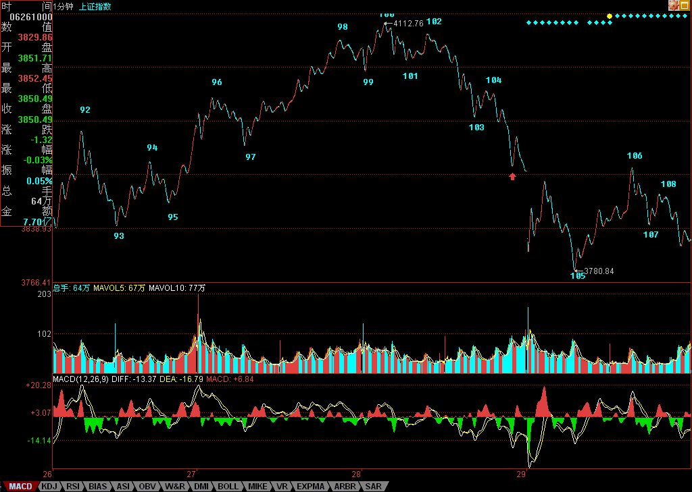

全球第一博客---缠中说禅
回目录
上一篇 酒酣聊赋《水调歌头》
上一篇 一根筋是不适合玩震荡行情的
下一篇 教你炒股票62：分型、笔与线段
下一篇 必须和企图捣毁共和国基础的舆论进行坚决斗争
解盘并说说中短线走势
2007/06/29 15:45:10 周五
昨天解盘中已经说到，如果图中红箭头所指位置不能突破，那么大盘就是最弱走势，今天，大盘盘中的反弹就刚好被这位置3919点所压制，一点都不差，这就如同前面的4244、4131等一样，都是极端精确的。谁告诉你本ID理论没有预测功能的，只是预测都是无聊玩意，没必要浪费时间。关键还是当下的操作。
今天105的背驰十分简单，但由于前面没有明确的1分钟中枢，所以这种背驰一般都只构成盘中的意义，昨天已经说过，只有1分钟以上级别的背驰才有参与意义。目前交易成本这么贵，又不是T+0，所以不熟练的，一定只能参与一些大级别的活动，太小的，估计只能用在权证或特别强势的股票上。但技术好的除外。今天，这样的震荡可以又吸出不少的血。
由于季线有500点的上影，所以该上影将一路压制7-9月的走势，本ID的那条1/2线，下月将上移到4159点，在站稳该线之前，大盘不可能展开象样的行情，只能如本ID6月4日文章所说，就是一个大震荡。下月的关键是5月均线，如果不破，那么大盘还有机会走三角形的整理，否则，一个平台型是不可避免的。本ID在6月5日反弹时已经明确说过，这个反弹最终不可能演化成V型，现在看来，最强的也就是三角形，其次是平台型，所谓平台型，就是要再次考验6月5日的低点。
当然，现在大盘依然存在走三角形的可能，下周是关键，5月均线不能有效跌破，而好的介入时机，还是至少是1分钟以上级别的背驰，反弹的压力，3919以及最重要的是5周均线。对于技术不好的，对震荡行情没把握的，在5周均线重新站稳之前，都可以不参与任何活动，多读点本ID的帖子更好。但是，像技术好的，如同本ID般经常要活动一下才舒服的，就可以在震荡行情中大吸其血。
注意，玩震荡一定要等适合自己资金的针对具体个股的较大买点，然后到较大级别卖点一定要卖，否则就是坐电梯，没意义了。这种活动必须多练习才有感觉的，如果觉得自己没有这方面的天赋，那就少弄，上网多弄419算了。
晚上还有应酬，先下了，本周的音乐会也没法开，就用各自猛烈的腐败活动去替代。
周末，腐败快乐。

教你炒股票62：分型、笔与线段
回目录
上一篇 酒酣聊赋《水调歌头》
上一篇 一根筋是不适合玩震荡行情的
下一篇 教你炒股票62：分型、笔与线段
下一篇 必须和企图捣毁共和国基础的舆论进行坚决斗争
显示回复
回复
只显示缠师回复
新浪网友
2007/06/29 15:48:11 周五
SAFA
朗月无花
2007/06/29 15:48:26 周五
沙发？
新浪网友
2007/06/29 15:48:36 周五
再占一个,哈哈
touchnet
2007/06/29 15:49:24 周五
老大好！
July
2007/06/29 15:49:36 周五
幸运沙发~~希望好运也来到~~
缠猫
2007/06/29 15:49:38 周五
1
新浪网友
2007/06/29 15:49:57 周五
慢了一步。
新浪网友
2007/06/29 15:50:03 周五
HHH
新浪网友
2007/06/29 15:51:30 周五
忽悠,接着忽悠
悠悠悠哉
2007/06/29 15:51:30 周五
老大 大盘会不会去3100 啊
dragonjones
2007/06/29 15:51:31 周五
大盘这2个月，肯定走弱，无论从技术或者政策层面皆如此
幼稚园
2007/06/29 15:53:23 周五
板凳
水浴清蟾
2007/06/29 15:53:27 周五
妹妹今天好准时，今天帮一朋友用你的方法解套，好爽，越跌越爽！
唯一
2007/06/29 15:54:40 周五
缠姐好
新浪网友
2007/06/29 15:55:38 周五
牛
学生
2007/06/29 15:56:18 周五
谢谢老师教导!继续练习...
July
2007/06/29 15:56:56 周五
缠mm帖子里总说的“红绿箭头所指的位置“，这个红绿箭头怎么弄出来的阿？
老实念佛
2007/06/29 15:57:31 周五
顶缠妹！
缠迷
2007/06/29 15:58:08 周五
终于坐上了第一页啊，真不容易啊！
缠M好，以后我会来学习你的先进理论的！
这比三个代表，8荣8耻值钱多了！
楚狂人
2007/06/29 15:58:39 周五
心态不好调整ing～
小学生
2007/06/29 16:00:35 周五
第一排
今天第一次真金白银的实践了一下缠JJ的理论，心理素质太弱的人不适应。用的是钢铁8.8出了，受不了8.92买回来，收到8.4,学习学习再学习!
灰色真实
2007/06/29 16:00:40 周五
补好就跌停
水中鱼
2007/06/29 16:00:43 周五
好好看解盘，努力学习中~~~
一粒米
2007/06/29 16:01:22 周五
谢谢解盘。
继续持股中。
恒河
2007/06/29 16:01:52 周五
呵呵，今天看盘看到感动不已~~~~祝缠周末愉快~~~~
小心谨慎
2007/06/29 16:02:03 周五
理论研究终有收获，现在的问题是老是纠缠在小级别里面，操作也就跟着小级别跑。心态也不好，有股看空，有钱看多，总是买早卖早。结果血没吸到，手续费交不少。不过至少避开了很大一部分风险。敢卖没错，但是这个世道敢买确老犯错。
leel
2007/06/29 16:02:09 周五
昨天又酒酣了？
千万少喝点酒，不要逞能.
女人对酒的耐受力比男人差。不要说现在身体好，等出问题就来不及了。
星空
2007/06/29 16:03:05 周五
周末愉快~~~
菊开那夜
2007/06/29 16:03:06 周五
在努力降低成本。但是真的很困难。~
猫
2007/06/29 16:03:59 周五
打卡~~~~~~~~~~~
除了打卡学习之外，还能干嘛？学艺不精只能干瞪眼、干着急……晕啊~~~~~~~~
阳光下的青草
2007/06/29 16:04:14 周五
谢谢缠主，技术不好又肯好好学的我５５５５５５５５５５５５５５５５５５５５５５５
石头叁
2007/06/29 16:05:18 周五
先顶再看
玫瑰心月
2007/06/29 16:05:53 周五
注意，玩震荡一定要等适合自己资金的针对具体个股的较大买点，然后到较大级别卖点一定要卖，否则就是坐电梯，没意义了。这种活动必须多练习才有感觉的
--------------------------------------------------
深有体会,只是多练习就意味着多交学费!!!
lanzhi
2007/06/29 16:06:22 周五
ding
醉石
2007/06/29 16:07:32 周五
用小资金来学习和体会~~~
严控仓位~~~
新浪网友
2007/06/29 16:07:58 周五
大盘兄好!请教个问题:100和那段比背驰了?两个中枢的位子在哪?
嘿嘿
2007/06/29 16:08:28 周五
少抽烟，多休息！！！
不是偶然
2007/06/29 16:09:06 周五
向数女问声好!
醉石
2007/06/29 16:09:08 周五
学会做T+0
今天尾盘小买600050,小补600017
3G
2007/06/29 16:10:07 周五
[匿名] 新浪网友
2007-06-29 16:07:58
大盘兄好!请教个问题:100和那段比背驰了?两个中枢的位子在哪?
-
97-98和99-100比，用盘整背弛的方法-
水尝无华_风风329
2007/06/29 16:10:53 周五
努力降低成本中
悟禅
2007/06/29 16:11:22 周五
明白了，谢谢老师！
小吴
2007/06/29 16:11:24 周五
缠姐，谢谢你的000338，让我避免了不少亏损，能不能帮我指点下，我打算下周再加仓该股，达到三分之2的仓位。三分之一的再做点波段，波段目前关注民生银行，和武钢。感觉大盘一稳，他们就会上去。国电南自手里还有一些，这股你怎么看？谢谢缠姐！
新浪网友
2007/06/29 16:11:28 周五
请问各位：三角型走势是怎么的走势？
山水_8888
2007/06/29 16:12:07 周五
今天能在第一页学习,真的很高兴!老师腐败快乐!周末快乐!
全线飘红
2007/06/29 16:13:21 周五
心态上转不过来，569又没高点出。
丢掉幻想为什么这么难！？
图已经发出信号，就是不愿去操作执行。
也许休息一下不再紧盯盘面，是更好的选择。
夜雨
2007/06/29 16:17:33 周五
姐姐好，坐了前排。
新浪网友
2007/06/29 16:18:26 周五
禅M好!!!
CCTV
2007/06/29 16:19:44 周五
妹子好！！！！
新浪网友
2007/06/29 16:22:17 周五
唉，也不知为啥下午要大发善心，竟放弃一吸血机会！看来不管做什么事情纪律是头等重要的！这大众公用昨儿下午就险些抢地板好在忍住了，今天地板小进了一些！看看下周会有啥表现！
天朝民工
2007/06/29 16:22:27 周五
前排
aaaaa
2007/06/29 16:24:41 周五
最近股票玩的太累人了,不想玩了,休息一阵,晚上陪老婆看快男,这次估计南京赛区的吉杰要出局了
新浪网友
2007/06/29 16:25:28 周五
顶
tryrtytry
2007/06/29 16:27:28 周五
今天楼主较全面地讲了各种级别下的操作，光小级别不全面，要全面的看。
新浪网友
2007/06/29 16:28:59 周五
[匿名] aaaaa
2007-06-29 16:24:41
最近股票玩的太累人了,不想玩了,休息一阵,晚上陪老婆看快男,这次估计南京赛区的吉杰要出局了
--------------
晕,,,,,,,,一个老男人
以后不用你名了
tryrtytry
2007/06/29 16:29:53 周五
[匿名] 新浪网友
2007-06-29 16:11:28
请问各位：三角型走势是怎么的走势？
============
震荡的幅度逐渐变小的走蛰。
简单
2007/06/29 16:30:28 周五
我是没预测功能也在股市提款
新浪网友
2007/06/29 16:31:59 周五
[匿名] 3G
2007-06-29 16:10:07
[匿名] 新浪网友
2007-06-29 16:07:58
大盘兄好!请教个问题:100和那段比背驰了?两个中枢的位子在哪?
-
97-98和99-100比，用盘整背弛的方法-
-----------------
那老大为什么说是顶背驰?不是趋势怎么可能背驰?如果是盘背老大不会这么说啊.还说100是一卖!
新浪网友
2007/06/29 16:33:27 周五
[匿名] 3G
2007-06-29 16:10:07
[匿名] 新浪网友
2007-06-29 16:07:58
大盘兄好!请教个问题:100和那段比背驰了?两个中枢的位子在哪?
-
97-98和99-100比，用盘整背弛的方法-
-----------------
那老大为什么说是顶背驰?不是趋势怎么可能背驰?如果是盘背老大不会这么说啊.还说100是一卖!
简单
2007/06/29 16:33:36 周五
那些内鬼汉奸再去看看你们美国祖师爷怎么给股市下的结论.好好理解再谈泡沫的问题.
新浪网友
2007/06/29 16:33:43 周五
楼主成天忙什么呢??
跟一帮酒肉之徒搅的那么热乎
新浪网友
2007/06/29 16:37:27 周五
受益中，可惜心太慌
老鬼
2007/06/29 16:38:57 周五
看盘一根筋，幻想蒙蔽了眼睛
简单
2007/06/29 16:40:25 周五
估计没用.搞个民调就知道吉杰出不出局了
新浪网友
2007/06/29 16:41:23 周五
我是我爱法拉利!
顶!!!
新浪网友
2007/06/29 16:41:45 周五
.....但由于前面没有明确的1分钟中枢，所以这种背驰一般都只构成盘中的意义，......
_______也就是没有买点！
。。。。但技术好的除外。今天，这样的震荡可以又吸出不少的血。。。。。
---------技术好的就不要买点吗？
就算今天106为卖点 ，光出不进，怎么吸 ？
博主不是喜欢进进出出吗？
忽悠，接着忽悠！
石猴
2007/06/29 16:41:53 周五
缠中说缠股票理论论导读一:一种小缠的非小缠图解线段法1
尽信佛不如无佛,尽信小缠不如无小缠.小缠的股票理论基础有两个,一,走势终完美(估计这句很多人就晕了,如果明白了这句,很多问题都不是问题了)
二是中枢的概念,中枢是由线段组成的,但如何在弯弯曲曲的图上画出组成中枢的那三根线段,就成很多人的梦魇,可怜学了半年,好象都明白了,一到实盘就晕.
说来这事怨小缠,因为她自己就没觉得画线段是个难事,太容易了,用她的话说:"有眼睛就看出来了"但100个人中,99个看不出来吧.
不怨小缠是因为她是无意的,她做高手太久了,很多东西对她是自然的,她忘了对初学者是不自然的.她的课程编排说来应该是初中以上水准的人才能真读懂的,而不是象某个叫阿罗修的大吹牛皮,什么读了前十七章就知道小缠的真传了,狗屁,前十六除了讲战略,和心态,就讲了个均线系统,而均线系统和中枢系统毫不相干.
真是井底之蛙,看到均线系统就觉得是个宝了.十七章才开始介绍中枢,何况小缠的最精妙的并不是股票理论,而是中枢理论的哲学基础,这个以后再说了.
很多定义小缠定义的很清楚,但有些并未清楚给出,大概是因为她觉得自然你就知道了.有的人留言质疑这些,有些懂了些皮毛就让人家回去再多看书.人家回去看了还一脑袋糊涂浆.中枢有级别,线段也有级别,但小缠并无明确定义,我来定义一下,但这可不是胡论定义.严格符合小缠的理论.
先定义线段,什么是线段,两点组成一个线段,在K图中有意义的就一个高点,一个低点,什么造成了这个高低点呢?是转折,是趋势的转折.这就是小缠走势终完美的意义!小缠是小姑娘,爱拽些美文,可以理解,但苦了很多男猿人,女猿人,我想很多人大概看这句话时就是那么一看,马上就奔下面去了.我用大白话给大家讲解下:股价有涨,但不可能无限涨下去,总有(这总有就是完美的意思)一个时间会变成盘,或者跌;股价有跌,但不可能无限跌下去,总有(这总有就是完美的意思)一个时间会变成盘,或者涨.有两个情况例外,就是股票退市了停止交易,或者地球爆炸了.这个转折时间点上的价格就是线段的高点,和低点.盘如果发生在最高点,或最低点,取盘的高点做高点,盘的低点做低点.如果盘在途中,就只当是单根K线.
新浪网友
2007/06/29 16:42:47 周五
D-
新浪网友
2007/06/29 16:42:47 周五
9:31--9:55为什么不可以成为线段?
石猴
2007/06/29 16:43:21 周五
缠中说缠股票理论论导读一:一种小缠的非小缠图解线段法2
在画线段的上,重要的是高点:上转为下;低点:下转为上.请注意,这个上,是不能再上了,因为出现上了再上,走势还没完成,就不是线段的高低点.
由小缠的定义而来
单根K线上涨：最近一根K线高点比前一根高点高，且最近一根低点比前一根低点高。
单根K线下跌：最近一根K线高点比前一高点低，且最近一根K线低点比前一低点低。
单根K线盘整：最近一根K线高点比前一高点高，且最近一根K线低点比前一低点低；或者最近一根K线高点比前一高点低，且最近一根K线低点比前一低点高。
一分钟K线图上,交错的小红段,,小绿段很明显,但其他级别K图上,K线之间有些乱,
再定义一个单根大K线,如果几根连续的k线是一个单边走势,先把这几根连成一个小段,完全可以把这个小段当成个大K线,上涨就是红的,下跌就是绿的.
最后,有上面三组定义可知,小缠所谓的线段就是由这些小的红绿段,或者大K线组成的线段,我把这些成为中枢的折.
别偷懒,自己拿笔画出图,就印象深刻了!最简单的东西蕴涵的内容最丰富,是最不容易真明白的,不真明白,到股市里就是死路一条.
石猴
2007/06/29 16:45:12 周五
缠中说缠股票理论论导读一:一种小缠的非小缠图解线段法2
一分钟级别的K线段:就是一分钟图上,一个趋势的高点和低点之间连成的直线段,也就是我们只关心这个趋势段的两端,中间如何的弯曲是我们不关心的,这也就是6月23日小缠留的那些图的真实意图,如何抹平K线图上的小弯曲.哪些是可以抹平的,哪些是不可以抹的,这也就是大家困惑的地方.而这个线段就是中枢及其延伸的那些折!这些线段就是小缠说的次级别走势,这些折构成的中枢就是一分钟级别的中枢.折你都找不清楚,还中什么枢,找不出中枢自己操作失败,还敢来埋怨,甚至大骂小缠理论不行,靠,自己糊涂就多思考,大骂只能说明自己白痴,还惟恐别人不知道.
头脑还没晕的人会问,中途出现盘怎么办?如果盘了以后,上还继续上,下还是继续下,那只把盘只是途中的一站,继续前进;如果上,盘,然后转而下,那盘的那些K线最高点就是这段的高点;下的情况反之.
小缠用的是自然的k线图,好象很自然,但严格说这不符合小缠理论的,一个单根K线,在小缠理论中关心的是最高价,最低价.只要能看到一个小棍就足够了,所以为了方便画图,大家把K线缩小些,看到红绿棍连成的线就好了.另外把那些均线都去掉,和中枢理论无关,要它做甚.
自然的K线,就是把这个问题搞复杂了的地方,把猿人们搞晕了,小缠也是无意的.她也累,画那些符让大家明白这个道理,可怜也没几个明白她真实意图的.小缠是个大师,也是个耐心,细致,好心的老师,但她不是启蒙的老师,所以她得反复来讲基础,很大程度是因为这个教程的编排,尤其是顺序很多地方是不适合初学者.等我通透了,有时间了,从新编个小缠理论小学教程,当然得小缠同意.
简单
2007/06/29 16:45:32 周五
不过我们不会民调,向美国式民主学学就会了
石猴
2007/06/29 16:46:54 周五
缠中说缠股票理论论导读一:一种小缠的非小缠图解线段法4
好的,问题讲清楚了,我们得自己来画线,熟练以后自然不用再画,眼都看出来了.但现在还是得自己动手画,我都自己画,你不画,比我还牛?
一分钟的线图最容易画,先画这个.5分钟以上的K图自己思考去吧,道理是一样的.人是有脑子的,脑子是用来思考的,即使你是猿人,这才是人和动物的区别.
用小缠的图来画.请看小缠教你炒股票57：当下图解分析再示范的附图
打开图到处是蚯蚓,晕啊,还是红绿两色的,更晕了.小缠说:"对着图，首先要确定最小分析级别，也就是说，这级别以下的都可以看成是线段，而站在最小分析级别的角度，每一线段就是其次级别走势类型，三个线段重合部分就构成最小分析级别的中枢。"看完得昏倒了
请跟我来吧:
再重复下前面的,比较单根K线,要比较同色的前后两根,效果一样,也明显;其次连续几根单K线如果是一个走势,先把它连成一个小段,当一根大K线,然后和前面同色的大K线比较,记住是小段和小段比;找出上的最高点,下的最低点,连起来就是一折,这些折就是组成中枢的折.
0到1,跳空低开,最简单,但这根线千万不能省略,01连起,一根线段了,也就是一折出来了.
1到2,很简单,后一根K线高点比前一根高,低点也比前一根高,第二根红线后转下了,这不用我告诉你吧.OK,12连起,二折也出来了.
2到3,小缠的原话是:"23段上上下下，很复杂，怎么都是线段？因为这都不是1分钟的走势类型，里面没有1分钟的中枢，所以都是1分钟以下级别的，虽然缺口是最低级别的，当然比23段这种要低级别，但在1分钟级别显微镜下，没有区别，都可以看成是没有内部结构的线段。"
这个说法的道理,逻辑都是非常正确的,但就是把初学者搞晕了
用我的方法判断,会有人困惑,困惑在三个绿色箭头那,这就是我讲的,平的段就是个盘的阶段,而盘在上或下的途中只是一站,当成个点就好了.用小缠的话讲是只要线段的内部结构未被破坏,线段就还在继续,再重复一遍,趋势未完线段也未完,就不是高低点!这三种说法都是一个意思.如果你还不明白,找面墙,把脑袋撞三次,大概就形成一个中枢了,嘿嘿.
ok,23可以连上,这样有三折了,你看到了什么?中枢,一个一分钟的中枢就这么形成了,后面一段时间就是围绕着这个中枢,震荡,形成一分钟级别的买卖点.
3G
2007/06/29 16:47:39 周五
[匿名] 新浪网友
2007-06-29 16:42:47
9:31--9:55为什么不可以成为线段?
-
没有突破前面的低点-，楼主昨天的帖子附录中把这个问题说得很清楚
石猴
2007/06/29 16:49:08 周五
缠中说缠股票理论论导读一:一种小缠的非小缠图解线段法5
有人留言说N型就是中枢,打开图一看,啊,好性奋,到处都是N型,到都是中枢啊.别激动,很多N型不是中枢.有个基本定理,中枢和中枢的连接一定是次级别以下的走势,也就是必须有我所说的一折.所以形成中枢很多时候,是四折.前面123形成的中枢前,已经有一折了,所以123是个中枢.
一个好的判断方法就是小缠说过的:在上升段任何一个低点,比前面所有的高点都高,就还是在上升; 在下跌阶段,后认识一个高点,比所有的低点还低,
就还是 在下降.
3到4,4到5,67都没什么特别的,如果5后面那个低开点比5低,低点就是那个点,
8到9需要仔细注意,9点比8点略低些,根据实际情况自己判断吧
这个方法的思路是没什么问题的,具体的判断,尤其是细节的判断还不完善,需要大家自己多看图,多画图,尤其是小缠很耐心的标注了100个点,大家可以先自己画,对照小缠的点,来找出自己的问题.
今天是6月29日,俺四月初第一次接触股票,5月29日看到小缠的理论,内心狂喜,不只是她的股票理论,而是她理论的思想基础和我的想法是相同的,就是股票的涨跌盘,这三种状态是股票,或者一切交易,甚至这个世界的基础,也就是小缠说的不患.但如何把这种不患,转化成可具体操作的术,小缠做到了,真了不起.真是高山流水,钟子期听到伯牙的琴声也就这种感觉了.530股市大跌,俺都没放在心上,全精力投入学习中,努力学习了一个月,因为思想基础把握的比较好,以前读书也杂,有了些心得.写这个贴子,主要是看很多人有心学习小缠的理论,小缠也在努力的教,但效果不是很好,小缠太超前了,所以把自己的体会让大家看看,如果能为大家也窥到小缠理论的美妙境界,起些作用,是很开心的事.另外也算是自己一个月学习的一个小结,小缠理论博大精深,实盘操作更需要将各方面的定理,理论综合判断应用,我需要努力,大家也需要努力,容易来的怎么会是珍宝.
这种方法欢迎大家讨论,和完善,但象那种说动不动我不懂中枢的,请具体技术讨论,不要在后面扔小砖头.也许现在我对小缠的理论和把握,还比有些人差些,但那只是时间问题,而且也是短时间的事,在我眼里,这五百万的点击中,还没有高手.什么是高手,敢接小缠三千万股市挑战的那人才是.
如果这篇贴子,你看后觉得好,对你有些帮助和启发,请下周每天在小缠的留言里贴一次,让后来者也看看.
另:我自己觉得这篇可以列到小缠的讲义中,小缠看到了考虑下.
简单
2007/06/29 16:49:16 周五
我简单推断,下届美国民主要用12个人控制民调才行
石猴
2007/06/29 16:51:32 周五
缠中说缠股票理论论导读一:一种小缠的非小缠图解线段法5
有人留言说N型就是中枢,打开图一看,啊,好性奋,到处都是N型,到都是中枢啊.别激动,很多N型不是中枢.有个基本定理,中枢和中枢的连接一定是次级别以下的走势,也就是必须有我所说的一折.所以形成中枢很多时候,是四折.前面123形成的中枢前,已经有一折了,所以123是个中枢.
一个好的判断方法就是小缠说过的:在上升段任何一个低点,比前面所有的高点都高,就还是在上升; 在下跌阶段,后认识一个高点,比所有的低点还低,
就还是 在下降.
3到4,4到5,67都没什么特别的,如果5后面那个低开点比5低,低点就是那个点,
8到9需要仔细注意,9点比8点略低些,根据实际情况自己判断吧
这个方法的思路是没什么问题的,具体的判断,尤其是细节的判断还不完善,需要大家自己多看图,多画图,尤其是小缠很耐心的标注了100个点,大家可以先自己画,对照小缠的点,来找出自己的问题.
今天是6月29日,俺四月初第一次接触股票,5月29日看到小缠的理论,内心狂喜,不只是她的股票理论,而是她理论的思想基础和我的想法是相同的,就是股票的涨跌盘,这三种状态是股票,或者一切交易,甚至这个世界的基础,也就是小缠说的不患.但如何把这种不患,转化成可具体操作的术,小缠做到了,真了不起.真是高山流水,钟子期听到伯牙的琴声也就这种感觉了.530股市大跌,俺都没放在心上,全精力投入学习中,努力学习了一个月,因为思想基础把握的比较好,以前读书也杂,有了些心得.写这个贴子,主要是看很多人有心学习小缠的理论,小缠也在努力的教,但效果不是很好,小缠太超前了,所以把自己的体会让大家看看,如果能为大家也窥到小缠理论的美妙境界,起些作用,是很开心的事.另外也算是自己一个月学习的一个小结,小缠理论博大精深,实盘操作更需要将各方面的定理,理论综合判断应用,我需要努力,大家也需要努力,容易来的怎么会是珍宝.
这种方法欢迎大家讨论,和完善,但象那种说动不动我不懂中枢的,请具体技术讨论,不要在后面扔小砖头.也许现在我对小缠的理论和把握,还比有些人差些,但那只是时间问题,而且也是短时间的事,在我眼里,这五百万的点击中,还没有高手.什么是高手,敢接小缠三千万股市挑战的那人才是.
如果这篇贴子,你看后觉得好,对你有些帮助和启发,请下周每天在小缠的留言里贴一次,让后来者也看看.
另:我自己觉得这篇可以列到小缠的讲义中,小缠看到了考虑下.
石猴
2007/06/29 16:52:17 周五
缠中说缠股票理论论导读一:一种小缠的非小缠图解线段法5
有人留言说N型就是中枢,打开图一看,啊,好性奋,到处都是N型,到都是中枢啊.别激动,很多N型不是中枢.有个基本定理,中枢和中枢的连接一定是次级别以下的走势,也就是必须有我所说的一折.所以形成中枢很多时候,是四折.前面123形成的中枢前,已经有一折了,所以123是个中枢.
一个好的判断方法就是小缠说过的:在上升段任何一个低点,比前面所有的高点都高,就还是在上升; 在下跌阶段,后认识一个高点,比所有的低点还低,
就还是 在下降.
3到4,4到5,67都没什么特别的,如果5后面那个低开点比5低,低点就是那个点,
8到9需要仔细注意,9点比8点略低些,根据实际情况自己判断吧
这个方法的思路是没什么问题的,具体的判断,尤其是细节的判断还不完善,需要大家自己多看图,多画图,尤其是小缠很耐心的标注了100个点,大家可以先自己画,对照小缠的点,来找出自己的问题.
今天是6月29日,俺四月初第一次接触股票,5月29日看到小缠的理论,内心狂喜,不只是她的股票理论,而是她理论的思想基础和我的想法是相同的,就是股票的涨跌盘,这三种状态是股票,或者一切交易,甚至这个世界的基础,也就是小缠说的不患.但如何把这种不患,转化成可具体操作的术,小缠做到了,真了不起.真是高山流水,钟子期听到伯牙的琴声也就这种感觉了.530股市大跌,俺都没放在心上,全精力投入学习中,努力学习了一个月,因为思想基础把握的比较好,以前读书也杂,有了些心得.写这个贴子,主要是看很多人有心学习小缠的理论,小缠也在努力的教,但效果不是很好,小缠太超前了,所以把自己的体会让大家看看,如果能为大家也窥到小缠理论的美妙境界,起些作用,是很开心的事.另外也算是自己一个月学习的一个小结,小缠理论博大精深,实盘操作更需要将各方面的定理,理论综合判断应用,我需要努力,大家也需要努力,容易来的怎么会是珍宝.
这种方法欢迎大家讨论,和完善,但象那种说动不动我不懂中枢的,请具体技术讨论,不要在后面扔小砖头.也许现在我对小缠的理论和把握,还比有些人差些,但那只是时间问题,而且也是短时间的事,在我眼里,这五百万的点击中,还没有高手.什么是高手,敢接小缠三千万股市挑战的那人才是.
如果这篇贴子,你看后觉得好,对你有些帮助和启发,请下周每天在小缠的留言里贴一次,让后来者也看看.
另:我自己觉得这篇可以列到小缠的讲义中,小缠看到了考虑下.
新浪网友
2007/06/29 16:53:03 周五
石猴
2007-06-29 16:46:54
缠中说缠股票理论论导读一:一种小缠的非小缠图解线段法4
-
强，支持！
新浪网友
2007/06/29 16:53:11 周五
请问各位网友600659可以吗?(我是初手,请各位指点一下)
aaaaa
2007/06/29 16:55:14 周五
[匿名] 新浪网友
2007-06-29 16:28:59
[匿名] aaaaa
2007-06-29 16:24:41
最近股票玩的太累人了,不想玩了,休息一阵,晚上陪老婆看快男,这次估计南京赛区的吉杰要出局了
--------------
晕,,,,,,,,一个老男人
以后不用你名了
=======
为什么要用别人的名,自己的名不敢亮出来吗?
新浪网友
2007/06/29 16:58:01 周五
石猴
2007-06-29 16:41:53
缠中说缠股票理论论导读一:一种小缠的非小缠图解线段法1
尽信佛不如无佛,尽信小缠不如无小缠.小缠的股票理论基础有两个,一,走势终完美(估计这句很多人就晕了,如果明白了这句,很多问题都不是问题了)
二是中枢的概念,中枢是由线段组成的,但如何在弯弯曲曲的图上画出组成中枢的那三根线段,就成很多人的梦魇,可怜学了半年,好象都明白了,一到实盘就晕.
说来这事怨小缠,因为她自己就没觉得画线段是个难事,太容易了,用她的话说:"有眼睛就看出来了"但100个人中,99个看不出来吧.
不怨小缠是因为她是无意的,她做高手太久了,很多东西对她是自然的,她忘了对初学者是不自然的.她的课程编排说来应该是初中以上水准的人才能真读懂的,而不是象某个叫阿罗修的大吹牛皮,什么读了前十七章就知道小缠的真传了,狗屁,前十六除了讲战略,和心态,就讲了个均线系统,而均线系统和中枢系统毫不相干.
真是井底之蛙,看到均线系统就觉得是个宝了.十七章才开始介绍中枢,何况小缠的最精妙的并不是股票理论,而是中枢理论的哲学基础,这个以后再说了.
很多定义小缠定义的很清楚,但有些并未清楚给出,大概是因为她觉得自然你就知道了.有的人留言质疑这些,有些懂了些皮毛就让人家回去再多看书.人家回去看了还一脑袋糊涂浆.中枢有级别,线段也有级别,但小缠并无明确定义,我来定义一下,但这可不是胡论定义.严格符合小缠的理论.
先定义线段,什么是线段,两点组成一个线段,在K图中有意义的就一个高点,一个低点,什么造成了这个高低点呢?是转折,是趋势的转折.这就是小缠走势终完美的意义!小缠是小姑娘,爱拽些美文,可以理解,但苦了很多男猿人,女猿人,我想很多人大概看这句话时就是那么一看,马上就奔下面去了.我用大白话给大家讲解下:股价有涨,但不可能无限涨下去,总有(这总有就是完美的意思)一个时间会变成盘,或者跌;股价有跌,但不可能无限跌下去,总有(这总有就是完美的意思)一个时间会变成盘,或者涨.有两个情况例外,就是股票退市了停止交易,或者地球爆炸了.这个转折时间点上的价格就是线段的高点,和低点.盘如果发生在最高点,或最低点,取盘的高点做高点,盘的低点做低点.如果盘在途中,就只当是单根K线.
=====
我要吐了，不谈缠的理论真实性多少，连缠论都看的半懂不懂的也出来装B。恶心死人
努力
2007/06/29 17:11:26 周五
努力学习，争取把损失夺回来
简单
2007/06/29 17:11:58 周五
八卦一下.悟空是从石头缝里崩出的一个猴子(还没到猿人)就有72变.一个筋斗10万8千里之能还被如来压在五指山下500年.
石猴
2007/06/29 17:12:11 周五
靠,烂新浪,不许一起发,发上来比写还累人,想一口气看的可到我的博客去看.有两个2,其中后面一个是3.贴了几次5,以为没贴上.嘿嘿,大家周末有事做了吧,有时间多学习,比你盯着自己的股票瞎看强.如果把我的贴子看懂了,大概可以节省你几个月学缠论的时间.什么是建设性,这就是建设性.不象某个叫什么阿锈罗的,大吹法罗还行,说什么大盘尽在缠师和他的法眼里,一到个股他就参不透.还什么读了前17章就通晓小缠精髓.哈哈,法罗吹太大了吧,大罗,把你的炖捂的东西也写来看看吧.
新浪网友
2007/06/29 17:13:30 周五
楼主喜欢进进出出,我想做爱也是进进出出,看来楼主是喜欢做爱的.
新浪网友
2007/06/29 17:18:10 周五
[匿名] tryrtytry
2007-06-29 16:29:53
[匿名] 新浪网友
2007-06-29 16:11:28
请问各位：三角型走势是怎么的走势？
============
震荡的幅度逐渐变小的走蛰
============
非常感谢，能解释一下3919的技术含义吗？ 这个不是线段级别的中枢吗？中枢都不算吧？
新浪网友
2007/06/29 17:21:52 周五
今天 买进600008和600350 哪位老大 熟悉这两个股票的话 给俺 看看 可以中期持有吗
力3528
2007/06/29 17:22:55 周五
什么天上第一博客啊，人都是逐利的，缠中说禅你看看你晚节不保的时候推荐的那几个股，套了多少人啊（你说的那些股我都没买过）。现在我来你这里看看主要是看看你怎么装神弄鬼的，解盘这个东西，会点技术的人都可以说几句，背驰这个玩意没个大方向做指引，你抓的在准还不是个热炭元，一句话，股市就是个资本的角逐，大资金大机构语话权就大，小散不自己学习搞油点，天天在这里被你洗脑不亏才怪，洗脑被洗的差不多的呢，自己亏了还自己责备自己技术不精，哈哈，千万别删我的帖哦
新浪网友
2007/06/29 17:25:09 周五
似乎高点上小级别的顶背驰都应该参与，而今天这种位置的底背驰确对上涨无关痛痒，能否解释下其中技术含义？现在对级别的选择真是太乱了。
新浪网友
2007/06/29 17:26:25 周五
请教石猴 怎么看背弛啊 一点不懂
清风
2007/06/29 17:27:25 周五
请教大盘兄，从走势的分析角度，大盘105后是否正在形成一个新的一分钟走势，谢谢
简单
2007/06/29 17:34:20 周五
报到.儿子去存车子,回来了
石猴
2007/06/29 17:37:58 周五
上面有人吐了,一般没什么脑子的人看理论就吐,买股票就套.可以理解,谁疼谁知道:)正好歇会,写个好玩的,让那吐了的接着吐,也许毒就清了.昨天上午15分钟顶背弛后,就看着大盘跌着玩,突然想到,大盘背弛了,沽沽该叫了,急忙赶去,果然啊,一片沽沽欢腾.五粮沽沽一分钟走势上冲到最近小枢,一分钟盘整背弛明显,类一买点6元买入,当天跳的真欢,从六块窜到6.74收.今早停盘一小时,开盘后上6.94两次,呵,那红柱子说顶背弛啦,顶背弛啦,当即6.95卖出.预计第一波跌到6.3,第二波跌到6元,果然6.3元那有个一万手的买盘护着,可惜撑了5根一分钟k线,哗哗的下跌,俺非常非常的高兴.刚才开盘,跌到5.94元,哎,又底背弛了,还等什么,买啊,又6.1元买入,等着到6.6元,可惜有事要外出,6.3走人.现在你到盘上看看,五粮沽沽冲到6.648,为什么呢,因为上面那个中枢在[6.59,6.72].呵,那个吐的,你又要吐了吧,没事,您慢慢吐,有空来我这里吐吐啊.
新浪网友
2007/06/29 17:38:38 周五
石猴
2007-06-29 16:51:32
缠中说缠股票理论论导读一:一种小缠的非小缠图解线段法5
有人留言说N型就是中枢,打开图一看,啊,好性奋,到处都是N型,到都是中枢啊.别激动,很多N型不是中枢.有个基本定理,中枢和中枢的连接一定是次级别以下的走势,也就是必须有我所说的一折.所以形成中枢很多时候,是四折.前面123形成的中枢前,已经有一折了,所以123是个中枢.
==============
顶你是因为你热心.扁你是因为你误导.40%错误!
简单
2007/06/29 17:40:36 周五
要知道,我们中华民族原来是不信鬼神佛的,只祭拜自己的祖宗的.人家可是都有佛神鬼的.不能不小心
石猴
2007/06/29 17:41:06 周五
有人问背弛,还是先把中枢弄清楚了,背弛就不难了
石猴
2007/06/29 17:43:21 周五
楼上有人说我是误导,请用数据来说,欢迎探讨,懂就说出来,不要在那里扔小砖头,空说没什么用吧
好
2007/06/29 17:44:22 周五
石猴请你分析一下100点为什么是背弛?怎么比的?理由?
50年以前
2007/06/29 17:45:36 周五
谢谢缠姐，我就是按照昨天说的操作的。虽说反映有点迟钝了。到106过了才突然警觉原来没超过3919，赶紧卖。加上通道的问题，卖得比较低。总体还是成功的
新浪网友
2007/06/29 17:46:03 周五
石猴
2007-06-29 17:37:58
上面有人吐了,一般没什么脑子的人看理论就吐,买股票就套.可以理解,谁疼谁知道:)正好歇会,写个好玩的,让那吐了的接着吐,也许毒就清了.昨天上午15分钟顶背弛后,就看着大盘跌着玩,突然想到,大盘背弛了,沽沽该叫了,急忙赶去,果然啊,一片沽沽欢腾.五粮沽沽一分钟走势上冲到最近小枢,一分钟盘整背弛明显,类一买点6元买入,当天跳的真欢,从六块窜到6.74收.今早停盘一小时,开盘后上6.94两次,呵,那红柱子说顶背弛啦,顶背弛啦,当即6.95卖出.预计第一波跌到6.3,第二波跌到6元,果然6.3元那有个一万手的买盘护着,可惜撑了5根一分钟k线,哗哗的下跌,俺非常非常的高兴.刚才开盘,跌到5.94元,哎,又底背弛了,还等什么,买啊,又6.1元买入,等着到6.6元,可惜有事要外出,6.3走人.现在你到盘上看看,五粮沽沽冲到6.648,为什么呢,因为上面那个中枢在[6.59,6.72].呵,那个吐的,你又要吐了吧,没事,您慢慢吐,有空来我这里吐吐啊.
=====
盘背有买点，还是1分钟的盘背 你是神仙 人不要脸天下无敌真是说对了
新浪网友
2007/06/29 17:48:05 周五
1995年，国内国债期货交易如火如荼，当时以上海证券交易所交易量最大最活跃，其中多空两大阵营汇聚当时中国证券市场的风云人物.管金生等空方为“中国证券市场早期最有思想的一批市场派人士”，他们更相信自己的分析；多方则纯粹是一批“黑幕消息派人士”，他们炒的是“内幕消息”，这本来是违法的，可是在中国，从来都是“老实规矩的人吃亏”，不违法打点“插边球”是很难赚到大钱的. 空方在145元附近大举做空，因为他们判断“保值贴补率”不可能再次提高，因为当时已经很高了，经济发展的趋势势必使政府减息，因此他们强力做空。 多方则为财政部的直系券商，他们及其客户大举建立“多头头寸”后，就大举公关，到北京财政部大举游说（不知道当时的财政部官员到底受了多少贿，因为财政部本来是最不想提高“保值贴补率”的，因为这样，他就要拿出许多真金白银来给别人），最后终于被他们游说了当时财政部所有官员甚至直通总理，将“保值贴补率”再次提高到12.98%，这就是将万国证券和辽国发逼死了的根本原因。。。。。 这次正当所有空头们都以市场化的眼光来看，“保值贴补率”不可能再加，而结果却让他们大跌眼镜，“保值贴补率”竟然提高到12。98%！327国债价格井喷！
本来，“辽国发”的高岭早就听别的朋友说“保值贴补率”要继续提高，只是他一直不敢相信，正在这几天，他才刚刚又调集3个亿资金（放大100倍做国债期货相当于300亿资金），准备继续大举做空，与多方决一死战（许多空方同盟军都戏称高岭调来了3亿军饷！）最后一天晚上，当他确知“保值贴补率”最终被提高到12.98%时，他不由得悲叹：在中国证券市场还是要关系，要有铁后台，这样才可以赚到钱。。。。。。于是，当晚，他买通了许多别的单位席位上的“红马甲”，在第二天早上立即将其50万口“沽单”平仓同时追加“买入”50万口反手做多，100万口揸单将327国债的价格封到152.50这个绝对涨停板上。。。。。辽国发的高岭“临阵叛变空翻多”，将万国证券的管金生送上了不归路，当327国债被冲到152.50的涨停价并被封死时，万国证券全线亏损并爆仓，想我们的“上海滩证券教父”怎么可能服气而将自己辛苦多年创立的万国证券毁于一旦？
新浪网友
2007/06/29 17:48:58 周五
于是，管金生指挥他们万国证券公司在上海证券交易所中的6个“红马甲”，在收盘前15分钟，挂出1000万口空单，将327国债的价格打回147.50，将所有跟风多头杀得立即爆仓，而万国证券立即扭亏为盈并反过头来赚了几个亿!可是，这样的操作是明显违反当时的规定的，于是，证监会紧急开会，宣布当天最后15分钟交易不算数，万国证券遭受灭顶之灾，被申银证券按照规定重组，而管金生则被关进了监狱。。。。。。财政部直属并散布内幕消息的中经开则没有任何事情，中国证券市场是多么不公平！只要你有铁的关系后台，你就没事，如果你没有后台，只是凭借市场手段开拓出来的局面，则不管你能力再强贡献再大，关键时刻也是难逃一劫!后来我才知道，其实最后那次的“保值贴补率”提高到12。98%，完全是多头“公关”攻出来的，他们买了许多国债期货头寸后，就行贿买通财政部官员，让他们非理性地提高，“保值贴补率”，达到他们多头顺利出货的目的，而将千千万万无辜的中小投资者套死在天花板上。。。。。唉，中国证券市场历来都是这样一个基调“升、百姓苦；跌、百姓苦”！于是，这次“327事件”就成了“中国证券市场瓜分国有资产的一次超级豪华大餐”，中经开在江浙一带证券营业部的私人客户都大赚特赚，将万国证券和辽国发的几十亿资金全部瓜分，造就了江浙一带一大批富豪！ 这就是内幕交易的经典之作，其实就是一个“局”，只要舍得花钱，就可以买通原证监会和财政部等其他管理层的官员，使得政策朝自己期望的方向走，从而“赚得不清不楚”。与国债327事件同时期的深圳证券交易所也曾经推出过几个国债期货品种，因为当时交易量小，交易所的国债部主管就找来几个同学，说“我们先开个局，就象打麻将一样，张三李四你们两个的公司做多，王五赵六你们几个的公司做空，将交易做得活跃一些，然后将别人诱惑进来，当被骗参与的人多了之后，我们这五个人就一起联手做多，将所有参与近来的其他圈外人的保证金全部吃进我们的腰包。。。。。。”；果然，发起的那几个人后来每人都赚了几千万，逃到国外，后又回来，买别墅开公司，过着醉生梦死的生活。。。。。所以，在深圳的证券圈内，许多人热衷于“打桥牌和搓麻将”而懒于研究行业和上市公司，因为所有赚钱的方式都是他们这些圈内人设的“局”----骗人骗钱的“圈套”，就等着“局外人和圈外人”来钻圈套，去调研和考察上市公司有个屁用！？
新浪网友
2007/06/29 17:49:30 周五
后来中经开在“长虹转配股违规上市”中又故伎重演，赚了很多钱，后来中国证券市场的几个大系如“涌金系的魏东”、“东欧系”、“金信系”、“汉龙系”的成长发展都与“长虹转配股违规上市”获取暴利有关。。。。。。 这就是中国证券市场的黑幕。。。。。所以我说中国证券市场本来就是一个大骗局！
简单
2007/06/29 17:50:53 周五
我想我一定是赢
三次求解
2007/06/29 17:53:22 周五
支持石猴. 写得生动易理解, 虽然我仍一知半解.
江湖
2007/06/29 17:53:33 周五
139,半年报0.45元
简单
2007/06/29 17:55:43 周五
理性的赌徒,不怕有人骗的.只在乎自己的炒作模型和心态
50年以前
2007/06/29 17:56:42 周五
各位，5月均线是不是月线上的M5,也就是3567.72？
50年以前
2007/06/29 17:58:31 周五
[匿名] 江湖
2007-06-29 17:53:33
139,半年报0.45元
----------
牛啊，也不知道什么时候行情能启动，可惜我这两天减掉好多，也不知道还有机会买回来没有
力3528
2007/06/29 18:01:08 周五
石猴啊 石猴，不管你上吐下泄，你都没逃过如来佛的掌心的，你在这里干嚎什么呢，你想做新一代的带头大哥吗
三次求解
2007/06/29 18:03:26 周五
背驰, 与盘整背驰.
哪位达人能给出此二者的定义吗??? 我至今没搞清楚.
没错, 博主在第24课以非常具体详细的方式, 以中国人兽和上证5分图举了例子. 但却没定义?
标致sky
2007/06/29 18:03:58 周五
善群成员标致sky报到，感谢善群的学长们无私的奉献。这段时间可以好好学习一下缠论。与大家共勉，祝我们好运气！
新浪网友
2007/06/29 18:04:08 周五
ok,23可以连上,这样有三折了,你看到了什么?中枢,一个一分钟的中枢就这么形成了,后面一段时间就是围绕着这个中枢,震荡,形成一分钟级别的买卖点.
--------你说的中枢对吗?中枢都分不清还来讲解?不该扁?你自己看看缠是怎么画的!再扁!
新浪网友
2007/06/29 18:06:41 周五
我们欢迎真懂的朋友来讲解,类似石猴这样的就不要现眼!再扁你!
新浪网友
2007/06/29 18:08:05 周五
朝云横度，辘辘车声如水去。白草黄沙，月照孤村三两家。
飞鸿过也，万结愁肠无昼夜。渐近燕山，回首乡关归路难。
新浪网友
2007/06/29 18:10:47 周五
挺大个人不知好赖!这里只有缠有资格讲解,别人免开尊口.即使想放屁也要先提醒一下你要放屁!你不知道庸医会害死人?再扁石猴!!!
石猴
2007/06/29 18:10:55 周五
呵,上面终于有人来探讨技术了,说一分钟没有盘背的买点,请看小缠教你炒股票第60课,小缠原话:
显然，46-55是一个5分钟的中枢，55跌破53后明显盘整背驰，各位也不难发现，如果把55当成第一类买点（严格来说，盘整背驰无所谓第一类买点，只是这样来类比），57就是一个第二类买点。55-60，是一个标准的线段级别的上涨，59-60的背驰足够标准.
请你再去看看五粮沽沽今天的一分钟图.有五分钟的情况,就有一分钟相同的情况.谁说盘整背弛不出买点呢??
三次求解
2007/06/29 18:11:52 周五
补充一下, 我说的"没定义", 指的是没有盘背的定义.
背驰的定义及判断方法文中有非常详细的描述.
鸢鸢
2007/06/29 18:15:02 周五
来晚了:(
新浪网友
2007/06/29 18:16:06 周五
"多读点本ID的帖子更好。"
===
鬼哟,在最需要你的时候,你总不在.越读越迷糊.
三次求解
2007/06/29 18:17:50 周五
哈哈, 用白话解这首词, 你这不分明要把博主气得吐血吗? --当然,她的器量不至于此. 哈哈,不过想想很好玩.
诗词一解说就没味道了. 意会吧.
新浪网友
2007/06/29 18:19:31 周五
打击一切类石猴的神棍!打击一切类阿修罗的精神病!打击一切CCTV这样的一知半解者!欢迎罗锅,大盘这样的讨论者.
龙一笑天惊
2007/06/29 18:20:08 周五
我下午看ＣＣＴＶ２报道,其中关于钾肥权证的报导,看了非常激动,到最后一天还可以上涨１００％，上午提醒证民快走，到下午开盘还是红的，到１４：５０分以后那个姑姑最后通知所有的学员,你们都走吧,他以0.107元的价格收了所有投资者权证,他的行为让那些见利忘义、营私舞弊、整日为人民服务的人，可以说是无地自容。。。。。。
勇敢的心
2007/06/29 18:21:42 周五
[匿名] 新浪网友
2007-06-29 18:04:08
ok,23可以连上,这样有三折了,你看到了什么?中枢,一个一分钟的中枢就这么形成了,后面一段时间就是围绕着这个中枢,震荡,形成一分钟级别的买卖点.
--------你说的中枢对吗?中枢都分不清还来讲解?不该扁?你自己看看缠是怎么画的!再扁!
--------
顶!
石猴
2007/06/29 18:21:57 周五
是我写错了,小缠原写的是,12,23,34构成中枢,但不影响你找出折.中枢要由前面的走势确定,找出折,中枢才能定.
石猴
2007/06/29 18:25:14 周五
呵呵,上面有人很激动,喊口号了,把别伤了腰,好在股市不是吹牛的地方,慢慢喊吧.俺得打球去了,生命在于运动.
好色小和尚
2007/06/29 18:26:55 周五
价值投资观念的毒害之下又一次在缠主的熏陶下逃过一劫！多谢你授我以渔！
新浪网友
2007/06/29 18:29:14 周五
石猴
2007-06-29 18:21:57
是我写错了,小缠原写的是,12,23,34构成中枢,但不影响你找出折.中枢要由前面的走势确定,找出折,中枢才能定.
==============终于承认错了,看来还不是那么不要脸!你想一下如果你学几天就会了那缠的理论也太肤浅了.不扁了!
新浪网友
2007/06/29 18:31:59 周五
唉,你说今天就是个15分钟的顶背弛,弄得上面几位着急上火的,不就是又被套了吗,消消火,没什么大不了的,股市还在,你还有得玩,各位周末愉快啊
新浪网友
2007/06/29 18:45:10 周五
5周均线是3991还是3919？有点不明白。。。
5月均线有效突破怎么才能有效突破，在5月均线附近介入？
还有就是上网419是啥意思？
谢谢老大。。。。。
devcon
2007/06/29 18:45:17 周五
搞不懂为什么石猴说了一些自己的感想，试着开启了讨论的氛围，就成神棍了？就在干嚎了？好些个骂人的人连个名都不留。很显然，不管石猴文章的内容是否有误，出发点和方法肯定是值得肯定的，这才是切实的讨论和交流，也才是互联网的精神所在。何况他的博客里也开宗明义地表明了自己提倡交流、反对偶像崇拜的态度，提倡自力更生。相比之下，好些网友在回答提问时往往很不耐烦，即使有的提问层次很低，即使提问的目的常常集中在询问具体的股票和价位之类有悖缠mm的初衷的方面，即使回答的人付出了再多的艰辛，也没必要脸一扯，指斥别人去看书去，虽然这样的回答绝对不会出错。看不上的问题，就不去回答嘛，不去骂那些刷屏的，不去骂说下流话的，却来骂石猴，这算不算某种劣根性呢？我看这回帖里喜欢吱声冒充神棍的不少，但绝不包括石猴！
新浪网友
2007/06/29 18:45:39 周五
[匿名] 三次求解
2007-06-29 18:17:50
哈哈, 用白话解这首词, 你这不分明要把博主气得吐血吗? --当然,她的器量不至于此. 哈哈,不过想想很好玩.
诗词一解说就没味道了. 意会吧.
————————————————————————————————————————————————————————————————————————————
哦，这位仁兄很能理解，我最后两句弄不清，不然，我来解，仁兄能不能说说？
新浪网友
2007/06/29 18:45:56 周五
41937860实战群，欢迎加入
天相
2007/06/29 18:46:57 周五
顶!周末抓紧时间学习.
小虎
2007/06/29 18:48:22 周五
谢谢神仙姐姐指点迷金，注意身体。
新浪网友
2007/06/29 18:57:22 周五
[匿名] 龙一笑天惊
2007-06-29 18:20:08
我下午看ＣＣＴＶ２报道,其中关于钾肥权证的报导,看了非常激动,到最后一天还可以上涨１００％，上午提醒证民快走，到下午开盘还是红的，到１４：５０分以后那个姑姑最后通知所有的学员,你们都走吧,他以0.107元的价格收了所有投资者权证,他的行为让那些见利忘义、营私舞弊、整日为人民服务的人，可以说是无地自容。。。。。。
————————————————————————————————————————————————————————————————————————————————————
再拿这事说事，我扁，用废纸赚足油水，最后回吐一点，叫有德，我真想一脚踢过去，把赌场里常有的事当作高于做工腐败的人。我告诉你：腐败分子和赌鬼，我对前者的容忍高于后者。
丹缠
2007/06/29 18:59:41 周五
今天空仓出局，不知道星期一会怎么样
新浪网友
2007/06/29 19:17:40 周五
缠主及各位：第56课有这一段
有人可能有疑问，那怎么知道这A段一定构成第二类卖点而不是直接创新高强烈上升，这很简单，具体的方法和区间套定理是一样的，就是看A段的内部结构，一旦内部出现背驰而当时位置没创新高或与前面走势产生盘整顶背驰，那么就一定是第二类卖点。在昨天的具体走势中，A段在内部出现上下上的内部结构时，其中的第二段向上明显出现背驰走势，这可以成交量，或从第一个红箭头所指的MACD绿柱子与后面红柱子绝对值大小比较辅助判断。因此，这个第二类卖点，可以用理论完全明确地确认，一点含糊的地方都不会有。如果当时当下不能明白，那就要抓紧学习了，因为这个问题确实太简单了。
当时图中MACD的指标为（24,52,9），显示绿柱子的面积比红的大，但缠主后面的所有的图的指标又都用的是（12,26,9），如果用后者指标，则无法用眼断定面积的绝对值大小，何解？？
缠论初学者
2007/06/29 19:22:41 周五
哪位学长告诉，缠论中关于中枢震荡的内容在哪些章节中？？？
新浪网友
2007/06/29 19:31:58 周五
[匿名] 新浪网友
2007-06-29 17:49:30
后来中经开在“长虹转配股违规上市”中又故伎重演，赚了很多钱，后来中国证券市场的几个大系如“涌金系的魏东”、“东欧系”、“金信系”、“汉龙系”的成长发展都与“长虹转配股违规上市”获取暴利有关。。。。。。 这就是中国证券市场的黑幕。。。。。所以我说中国证券市场本来就是一个大骗局！
-----------------------
知道如此内幕的牛人,不知现在搞的这一套打压措施是哪帮哪派公的关.
老大这次也被他们搞的挺惨.要不也不能那样怒发冲冠,壮怀激烈.这些好似老大的怨愤.
最爱股票
2007/06/29 19:46:11 周五
我学习了几天袢的理论,她是一个果敢的人.大家都学到了什么是禅了吗,色即空,空即色.实际上禅把大盘这个简单的东西复杂化了.用最简单的方法,一个量价背离就能看出来大势.第一天不知道,第二天绝对能看出来.她的理论对我们这样的中低水平不适合,只适合高级水平来补习.如果是初级水平只能是找套.偶尔嫌了也只是你运气.不过我这几天真的是学到了不少,虽然在她的博里也难免有自己的私心.但你只要了解她的个性了.你就能比较容易在她的股票里赚钱.我们做事要找对脾气的人,做股票也是,它跟庄的个性几乎是一样的.我喜欢禅的个性.
小八
2007/06/29 19:53:50 周五
老大好～～
初学者
2007/06/29 19:58:28 周五
请问各位，谁知道石猴的博客地址
新浪网友
2007/06/29 20:19:28 周五
？？
风景那边独好
2007/06/29 20:21:41 周五
缠姐，我第一次来，有点病急乱投医的味道，我是在帮我妈妈操作，但被套的好惨，我的000629送配后成本在10.77，今天跌到了8.27了，不知道近期有没有解套的可能，我应该割掉吗？
新浪网友
2007/06/29 20:30:13 周五
谁又把我打在了地板上？
我做梦还没醒，
你们就这样狠心的推倒我，
530让我惊魂一次，
605我小心地小心的看，
终于我决定：
进。
我继续530前的梦，
梦呀梦，
多少美妙，
我到处看到阳光灿烂。
620，
620来了，
小调整，
它没有干扰我梦进行式，
626回来了是不是？
我那么羞涩微笑着，
甜蜜着。
628来了，
629来了，
我目瞪口呆：
我的钱呢？
我的钱呢？
它怎么跳得比605还厉害？！
我失神，
继而暗泣，
最后我决定让它同企业同生死：
我是一个投资者，
到我退休时在享用它。
微笑，
微笑再一次在脸上闪耀，
只是这一次是从身体深部发出来的。
简单
2007/06/29 20:45:38 周五
这发债买外汇都直接说了.还通过,真荒谬
新浪网友
2007/06/29 20:46:14 周五
寻CCTV，望能一起交流~~~~~~~~~~加Q群34303317或者Q号359125241
分解
2007/06/29 20:46:41 周五
觉得自己没有这方面的天赋，那就少弄，上网多弄419算了。
======
总算明白一句话，腐败、4N9去！八卦一下，在腐败、4N9时也会想着你！！
有点明白有点晕
2007/06/29 20:47:41 周五
顶一下
新浪网友
2007/06/29 20:50:29 周五
匿名] 初学者
2007-06-29 19:58:28
请问各位，谁知道石猴的博客地址
——————————————————————————————————————————————————————————————————————————————————————
你不只是一个初学者，还是一个初到这种地方者。常到这种地方的人都知道自己有根魔棍，用这根魔棍在那有博客的人名字上一点，他的门就为你打开。
简单
2007/06/29 20:53:02 周五
外汇多美国佬逼你买外汇.就发债转嫁出去.常委会也是政府的附属物怎么叫最高权力机关啊,违宪的必须建立宪法法院
新浪网友
2007/06/29 20:54:28 周五
贪心或恐惧促成的决策通常都是错误的，通常也太慢，而且很可能是反方向才正确。在真刀真枪的金钱游戏上尤其如此，试图猜透市场或胜过众多专家，以便“卖高买低”，连想都别想，你一定会失败，而且可能输得很惨。
手机用户
2007/06/29 20:55:22 周五
一群无头苍蝇!到处乱飞乱撞.人外有人:天外有天!!!
麒麟
2007/06/29 20:56:48 周五
缠妹妹好!
初学者
2007/06/29 21:04:55 周五
[匿名] 新浪网友
你不只是一个初学者，还是一个初到这种地方者。常到这种地方的人都知道自己有根魔棍，用这根魔棍在那有博客的人名字上一点，他的门就为你打开。
谢谢指教！！！已打开了。
新浪网友
2007/06/29 21:05:59 周五
唉，也不知为啥下午要大发善心，竟放弃一吸血机会！看来不管做什么事情纪律是头等重要的！这大众公用昨儿下午就险些抢地板好在忍住了，今天地板小进了一些！看看下周会有啥表现！
你等着掉电梯井里吧
简单
2007/06/29 21:06:25 周五
既使被骗也是你自己的事,怪别人没用.他们就骗不到我
简单
2007/06/29 21:09:01 周五
你人外的人是谁.天外的天是美国佬.美国佬已经要认输了
简单
2007/06/29 21:10:08 周五
兔子的尾巴是长不了的.不久就要灭忘了
新浪网友
2007/06/29 21:20:32 周五
骗子.无耻的骗子.故弄玄虚,自以为是.你即将在腐败中腐烂
新浪网友
2007/06/29 21:22:39 周五
那帮文科生跑到哪里去了？不要理不行，文也不行，文理不行，你们还呆在这里干什么？楼主鄙视你们这种人，不仅仅是鄙视，简直是连鄙视都不一值。
简单
2007/06/29 21:30:42 周五
党中央的常委越多.趋势就是向下坡路走.还是只能5个.这是当今联合国常任理事国的结构.越多世界越不安宁
简单
2007/06/29 21:33:55 周五
文理就是武又怎么样.毛泽东不要枪有哪个能动他
新浪网友
2007/06/29 21:38:19 周五
[匿名] 简单
2007-06-29 21:30:42
党中央的常委越多.趋势就是向下坡路走.还是只能5个.这是当今联合国常任理事国的结构.越多世界越不安宁
————————————————————————————————————————————————————————————————————————————————————————————————————-
简单，你好象很不简单，说话都是狂人日记，你给我把楼主那首词的最后两句了了，不然，就不知道你是济癫还是癫济。
七二二
2007/06/29 21:40:13 周五
一切愉快！
简单
2007/06/29 21:49:04 周五
我看沽名钓誉的人就是伪.难道不知道巧言吝啬鲜于仁的意思吗?剥夺了那么多人的钱,做点善事,不是好人
简单
2007/06/29 21:50:44 周五
我对选秀这类的事不感兴趣,封建遗风
简单
2007/06/29 21:52:05 周五
随便你们文的武的伪的.我都破了你们
简单
2007/06/29 21:55:14 周五
我一再说.假名都不敢示人的还敢明斗文斗吗.我不喜欢武斗.这是我的偶像毛泽东说的.但是不代表不能武斗赢
新浪网友
2007/06/29 21:58:07 周五
怎样确认是有效的背弛啊???
阿牛
2007/06/29 21:58:31 周五
全线飘红
2007-06-29 16:13:21
心态上转不过来，569又没高点出。
丢掉幻想为什么这么难！？
图已经发出信号，就是不愿去操作执行。
也许休息一下不再紧盯盘面，是更好的选择。
======
同感同感！
不懂
2007/06/29 22:00:40 周五
[匿名] 简单
2007-06-29 21:49:04
我看沽名钓誉的人就是伪.难道不知道巧言吝啬鲜于仁的意思吗?剥夺了那么多人的钱,做点善事,不是好人
是谁干的啊？
不懂
2007/06/29 22:08:12 周五
什么啊？ 经济、政治、军事？
求索
2007/06/29 22:09:33 周五
这样说有点抽象，就用一个例子，请看601628人寿的5分钟图：11日11点30分到15日10点35分构成一个中枢。15日10点35分到16日10点25分构成A段。16日10点25分到17日10点10分，一个标准的三段构成新的中枢，也相应构成B段，同时MACD的黄白线回拉0轴。其后就是C段的上涨，其对应的MACD红柱子面积明显小于A段的，这样的背驰简直太标准了。注意，看MACD柱子的面积不需要全出来，一般柱子伸长的力度变慢时，把已经出现的面积乘2，就可以当成是该段的面积。所以，实际操作中根本不用回跌后才发现背驰，在上涨或下跌的最后阶段，判断就出来了，一般都可以抛到最高价位和买在最低价位附近。
缠姐：
急
我怎么样才能看到人寿以前的五分钟图啊，我的系统5月31日以前的就看不到了
简单
2007/06/29 22:10:12 周五
就是成天要到央视说自己好的人.不知道"人不知而不愠"的道理吗
简单
2007/06/29 22:12:12 周五
骆驼穿针眼是耶稣的话我怎么不知道
简单
2007/06/29 22:13:08 周五
我圣经是全解了才发东西的
简单
2007/06/29 22:15:10 周五
圣经很多线索.你们共产党不看.我可以看
sdf
2007/06/29 22:17:51 周五
[匿名] 简单
2007-06-29 21:52:05
随便你们文的武的伪的.我都破了你们
[匿名] 简单
2007-06-29 22:13:08
我圣经是全解了才发东西的
————————————————————————————————————————————————————————
就破破这个小东西吧——
掷笔穹苍立，银汉泻金樽。
求索
2007/06/29 22:24:16 周五
这样说有点抽象，就用一个例子，请看601628人寿的5分钟图：11日11点30分到15日10点35分构成一个中枢。15日10点35分到16日10点25分构成A段。16日10点25分到17日10点10分，一个标准的三段构成新的中枢，也相应构成B段，同时MACD的黄白线回拉0轴。其后就是C段的上涨，其对应的MACD红柱子面积明显小于A段的，这样的背驰简直太标准了。注意，看MACD柱子的面积不需要全出来，一般柱子伸长的力度变慢时，把已经出现的面积乘2，就可以当成是该段的面积。所以，实际操作中根本不用回跌后才发现背驰，在上涨或下跌的最后阶段，判断就出来了，一般都可以抛到最高价位和买在最低价位附近。
缠姐：
急
我怎么样才能看到人寿以前的五分钟图啊，我的系统5月31日以前的就看不到了
不好意思，换了一个软件，看到了
简单
2007/06/29 22:27:32 周五
我说过我设计的方法是代价最小的方法,这是我答应我的偶像毛泽东的,他老人家说足够注意,另一个让我随意,我就要仔细判断,最后决定决断不能随意
sdf
2007/06/29 22:29:52 周五
[匿名] 简单
2007-06-29 22:21:19
我不希望乱.但不代表能容忍用军队打手无寸铁的学生
————————————————————————————————————————————————————————————————————————————————
好了，你就乱吧，不奉陪。没事上来看看，看见缠女这首词，不知道她又怎么了，有些地方不懂，请教没人回，现在也差不多了，解去，有兴趣就来聊两句。
简单
2007/06/29 22:30:02 周五
这两个声音代表东西方不同的道德规范
简单
2007/06/29 22:32:05 周五
你们如果不负责任地处理问题.将受到历史无情的惩罚
听缠释禅
2007/06/29 22:37:56 周五
掷笔穹苍立，银汉泻金樽
======================
老大版: 老大想用她伟大的思想理念来拯救苍生,世界.而其胸
襟,理想,志向之博大,高远,宽广,即使天上银河里的水都倒到酒杯里,她也能喝个精光.其气势如虹已达极至.
顶，顶，狂顶缠姐
2007/06/29 22:44:35 周五
新浪网友
2007/06/29 22:58:21 周五
缠主及各位：第56课有这一段
有人可能有疑问，那怎么知道这A段一定构成第二类卖点而不是直接创新高强烈上升，这很简单，具体的方法和区间套定理是一样的，就是看A段的内部结构，一旦内部出现背驰而当时位置没创新高或与前面走势产生盘整顶背驰，那么就一定是第二类卖点。在昨天的具体走势中，A段在内部出现上下上的内部结构时，其中的第二段向上明显出现背驰走势，这可以成交量，或从第一个红箭头所指的MACD绿柱子与后面红柱子绝对值大小比较辅助判断。因此，这个第二类卖点，可以用理论完全明确地确认，一点含糊的地方都不会有。如果当时当下不能明白，那就要抓紧学习了，因为这个问题确实太简单了。
当时图中MACD的指标为（24,52,9），显示绿柱子的面积比红的大，但缠主后面的所有的图的指标又都用的是（12,26,9），如果用后者指标，则无法用眼断定面积的绝对值大小，何解？？
红柱子和绿柱子比较吗？？？
背驰不是 红和红比 绿和绿比吗 别误道大家
带头168
2007/06/29 23:01:23 周五
股市现在的问题是大量的银行资金、许多对风险毫无认识的散户、股民、基民们的资金蜂拥入市，很多投资者把房子抵押出去，有些退休人士把他们毕生的积蓄投资去炒股。相信这是政府需要监管，需要警示的。
烧卖
2007/06/29 23:17:04 周五
地球村？全球化。。。。
不明白就问
2007/06/29 23:28:02 周五
缠主及各位：第56课有这一段
有人可能有疑问，那怎么知道这A段一定构成第二类卖点而不是直接创新高强烈上升，这很简单，具体的方法和区间套定理是一样的，就是看A段的内部结构，一旦内部出现背驰而当时位置没创新高或与前面走势产生盘整顶背驰，那么就一定是第二类卖点。在昨天的具体走势中，A段在内部出现上下上的内部结构时，其中的第二段向上明显出现背驰走势，这可以成交量，或从第一个红箭头所指的MACD绿柱子与后面红柱子绝对值大小比较辅助判断。因此，这个第二类卖点，可以用理论完全明确地确认，一点含糊的地方都不会有。如果当时当下不能明白，那就要抓紧学习了，因为这个问题确实太简单了。
当时图中MACD的指标为（24,52,9），显示绿柱子的面积比红的大，但缠主后面的所有的图的指标又都用的是（12,26,9），如果用后者指标，则无法用眼断定面积的绝对值大小，何解？？
又看了一下，57课中的图中的绿的面积就不会比上面红的小，因为你用的是MACD（12,26,9），缠主自己的图都二种样式，何解？5月31号就打印出来发现这个问题，但一直没沙发坐就没问，现在不问不行了。
路人丁
2007/06/29 23:34:48 周五
顶一下石猴，为人民服务，参考一下也可以呀，干吗扔砖头。虽然偶到现在也不是太明白背驰，但偶认为4112在5分钟图上是钻石头，但当时自己的票还在翻红就没在意，昨天-5%，今天-10%，真NN的爽！今天最后买了极少的南航认沽1.75，理由一分钟背驰，不知有那位帮忙看看yes of no？
神了
2007/06/29 23:55:43 周五
说得你就象神，顶。不过是因为你资金多，不象散户任人鱼肉。你的理论不过是事后解盘来看，那是绝对准确。问题在于就如你所说，在当下如何判断，向上向下都是多方合力决定的，所以其实感觉没得意义。
高山沐清风
2007/06/29 23:55:44 周五
（（（或从第一个红箭头所指的MACD绿柱子与后面红柱子绝对值大小比较辅助判断。 ））） 因此，这个第二类卖点，可以用理论完全明确地确认，一点含糊的地方都不会有。如果当时当下不能明白，那就要抓紧学习了，因为这个问题确实太简单了。
当时图中MACD的指标为（24,52,9），显示绿柱子的面积比红的大，但缠主后面的所有的图的指标又都用的是（12,26,9），如果用后者指标，则无法用眼断定面积的绝对值大小，何解？？
红柱子和绿柱子比较吗？？？
背驰不是 红和红比 绿和绿比吗 别误道大家
＝＝＝＝＝
你看看第一句，那是缠的原文，一看你就不好好看缠老大文章！
恒灵
2007/06/30 00:23:05 周六
虽然严重被套，但仍感激缠主，是缠主告诉了我们好方法，继续努力学习，顶。
新浪网友
2007/06/30 00:26:28 周六
[匿名] devcon
2007-06-29 18:45:17
搞不懂为什么石猴说了一些自己的感想，试着开启了讨论的氛围，就成神棍了？就在干嚎了？好些个骂人的人连个名都不留。很显然，不管石猴文章的内容是否有误，出发点和方法肯定是值得肯定的，这才是切实的讨论和交流，也才是互联网的精神所在。何况他的博客里也开宗明义地表明了自己提倡交流、反对偶像崇拜的态度，提倡自力更生。相比之下，好些网友在回答提问时往往很不耐烦，即使有的提问层次很低，即使提问的目的常常集中在询问具体的股票和价位之类有悖缠mm的初衷的方面，即使回答的人付出了再多的艰辛，也没必要脸一扯，指斥别人去看书去，虽然这样的回答绝对不会出错。看不上的问题，就不去回答嘛，不去骂那些刷屏的，不去骂说下流话的，却来骂石猴，这算不算某种劣根性呢？我看这回帖里喜欢吱声冒充神棍的不少，但绝不包括石猴！
===============
你山炮啊???????????故意告诉错的答案不害人?????还要出缠的讲义不是剽窃加害人??????还让所有人看他的所谓缠理不害人?????你山炮啊??????他是为了自己博客的点击量!!!!!你个大山炮!
sdf
2007/06/30 00:38:49 周六
[匿名] sdf
2007-06-29 22:52:34
劫火摧天柱，怒水卷乾坤。
狂风恶雨犹把四海五洲吞。
百世凶龙战野，万里长戈挥日，碧血化红尘。
积骨平山壑，终古起愁云。
虎狼穴、神鬼界、死生门，
娑婆世界，痴客漫说地球村。
多少狐争兔斗，几许王成寇败，一一葬时轮。
掷笔穹苍立，银汉泻金樽。
——————————————————————————————————————————————————————————————————
灾难之火摧打天柱，暴怒之水席卷天地，
急风暴雨似乎要把四海五洲吞没，
古今豪杰枭雄大战原野，万里长戈挥映太阳，碧血把尘土染红，
积骨填平山壑，现在的人忘记了过去，让人起愁心。
虎狼穴、神鬼界、死生门，
大千世界，自以为是的人们无聊的说着地球村，
多少狐争兔斗，多少王成寇败，全都被时间埋葬，
（我要）用笔写春秋，叫这些有钱人离开美酒佳肴。
————————————————————————————————————————————————————————
上来再读翻译，认为修改几个字更好些，修改后附下：
灾难之火摧打天柱，暴怒之水席卷天地，
疾风暴雨似乎要把四海五洲吞没，
古今豪杰枭雄大战原野，万里长戈挥映太阳，碧血把尘土染红，
积骨填平山壑，（现在的人）忘记了过去，让人起愁心。
虎狼穴、神鬼界、死生门，
大千世界，自以为是的人们无聊的说着地球村，
多少狐争兔斗，多少成王败寇，全都被时间埋葬，
（我要）用笔写春秋，叫这些有钱人离开美酒珍馐。
听缠释禅
2007/06/30 00:43:35 周六
缠中说禅
劫火摧天柱，怒水卷乾坤。
狂风恶雨犹把四海五洲吞。
百世凶龙战野，万里长戈挥日，碧血化红尘。
积骨平山壑，终古起愁云。
虎狼穴、神鬼界、死生门，
娑婆世界，痴客漫说地球村。
多少狐争兔斗，几许王成寇败，一一葬时轮。
掷笔穹苍立，银汉泻金樽。
=======================
老大可谓大诗人中的牛人啊!
儿童版:
劫火摧天柱: 可以烧毁一切的大火叫"劫火",抢劫吗,还能给你剩啥.但咱这柱也不白给,叫"天柱",硬着呢.
怒水卷乾坤:一般都叫怒火,老大就给你个出人意表,叫"怒水",爱怎怎地.发疯发怒的水也不好惹,想卷走搅混天地.有时哮喘的劲也是不小的.
这两句好像是说:支天柱地的忠良,还有和谐社会受到强大恶势力侵害了,大有处于水深火热之中的可能.
狂风恶雨犹把四海五洲吞:强大恶势力胃口不小,内奸外奸脱不了干系.
百世凶龙战野: 让能活几百岁的凶猛恶龙在莽野撕杀.
万里长戈挥日: 用万里长的戈去钩太阳.
这两句描绘的撕杀场面不小吧.
碧血化红尘:上面弄的全是大家伙,这句终于整个小的,要不,这世界也太单调了.对比强列吧,这诗就更加湿了.这句把那悲壮,苍凉和触目惊心的宏大场面的搏杀涂上了一层壮烈凄美的色彩.
积骨平山壑: 战死的白骨把大山涧都给填平了.战争场面堪比三大战役啊.
终古起愁云: 由此引起的愁怨那是从古到今没完没了.
掷笔穹苍立: 想用一支笔把天支起来.
银汉泻金樽: 想用一个酒杯把银汉之水装起来.
这两句内意可能是:作者想用她伟大的思想理念来拯救苍生,世界.而其胸襟,理想,志向之博大,高远,宽广,即使天上银河里的水都倒到酒杯里,她也能喝个精光.其气势如虹已达极至.
中间的好理解一些,俺就不儿童了.
总之,作者的浪漫夸张手法的运用与毛泽东很有一比.
----------------------------
老大俺只能在这里419了,平时俺学习的不够,只能弄个儿童版了,反正你笑话俺,你也不认识俺,俺脸皮厚着呢!
听缠释禅
2007/06/30 01:06:20 周六
缠中说禅
劫火摧天柱，怒水卷乾坤。
狂风恶雨犹把四海五洲吞。
百世凶龙战野，万里长戈挥日，碧血化红尘。
积骨平山壑，终古起愁云。
虎狼穴、神鬼界、死生门，
娑婆世界，痴客漫说地球村。
多少狐争兔斗，几许王成寇败，一一葬时轮。
掷笔穹苍立，银汉泻金樽。
=======================
老大可谓大诗人中的牛人啊!
儿童版:
劫火摧天柱: 可以烧毁一切的大火叫"劫火",抢劫吗,还能给你剩啥.但咱这柱也不白给,叫"天柱",硬着呢.
怒水卷乾坤:一般都叫怒火,老大就给你个出人意表,叫"怒水",爱怎怎地.发疯发怒的水也不好惹,想卷走搅混天地.有时哮喘的劲也是不小的.
这两句好像是说:支天柱地的忠良,还有和谐社会受到强大恶势力侵害了,大有处于水深火热之中的可能.
狂风恶雨犹把四海五洲吞:强大恶势力胃口不小,内奸外奸脱不了干系.
百世凶龙战野: 让能活几百岁的凶猛恶龙在莽野撕杀.
万里长戈挥日: 用万里长的戈去钩太阳.
这两句描绘的撕杀场面不小吧.
碧血化红尘:上面弄的全是大家伙,这句终于整个小的,要不,这世界也太单调了.对比强列吧,这诗就更加湿了.这句把那悲壮,苍凉和触目惊心的宏大场面的搏杀涂上了一层壮烈凄美的色彩.
积骨平山壑: 战死的白骨把大山涧都给填平了.战争场面堪比三大战役啊.
终古起愁云: 由此引起的愁怨那是从古到今没完没了.
掷笔穹苍立: 想用一支笔把天支起来.
银汉泻金樽: 想用一个酒杯把银汉之水装起来.
这两句内意可能是:作者想用她伟大的思想理念来拯救苍生,世界.而其胸襟,理想,志向之博大,高远,宽广,即使天上银河里的水都倒到酒杯里,她也能喝个精光.其气势如虹已达极至.
中间的好理解一些,俺就不儿童了.
总之,作者的浪漫夸张手法的运用与毛泽东很有一比.
----------------------------
老大俺只能在这里419了,平时俺学习的不够,只能弄个儿童版了,反正你笑话俺,你也不认识俺,俺脸皮厚着呢!
温柔男人
2007/06/30 01:20:20 周六
响应博主开展腐败运动的号召，晚上去打了回野鸡，唉!和炒股一样让人失望。进进出出(抽抽拉拉)半天，将辛苦多日积攒的精币一个不留全泄到那个无底洞里了，之后就是无尽的懊悔，只怪自己没有接受风险教育。
hohoo
2007/06/30 01:31:35 周六
搞不懂为什么石猴说了一些自己的感想，试着开启了讨论的氛围，就成神棍了？就在干嚎了？好些个骂人的人连个名都不留。很显然，不管石猴文章的内容是否有误，出发点和方法肯定是值得肯定的，这才是切实的讨论和交流，也才是互联网的精神所在。
顶
我是猪头
2007/06/30 02:43:42 周六
无意中来到这里，很想学学博主的炒股知识，从第一章看到第十八章，看了一遍，不懂，再看一遍，还是不懂……我发觉自己真的就这么笨……
什么走势中枢，什么背驰，越看越晕菜。博主说的好几个图都没法看，根本就找不到博主说的图（580991），理解能力本来就太差，没有图结合起来看，就更是理解不了……
我是猪头
2007/06/30 02:49:26 周六
580991好像已经是行权的权证，现在看不到它的图了，有没有别的图形范例，可以很明显的看出背驰啦、中枢啦等等的？
缠中解馋
2007/06/30 03:23:10 周六
To石猴:
顶!有理!!!
缠主是顶级高手,可能并不是一个好的启蒙老师,因为在顶级高手眼里最自然的东西或许99%的人还是没搞懂!!!
看了缠主的课程明白25%(肯定正确),看了你的讲解明白50%(不能确定是否正确),嘿嘿!
希望以后能经常看到你的发贴.
再次在精神上支持你(别理拍砖的)!!!
新浪网友
2007/06/30 03:23:51 周六
[匿名] 温柔男人
2007-06-30 01:20:20
响应博主开展腐败运动的号召，晚上去打了回野鸡，唉!和炒股一样让人失望。进进出出(抽抽拉拉)半天，将辛苦多日积攒的精币一个不留全泄到那个无底洞里了，之后就是无尽的懊悔，只怪自己没有接受风险教育。
————————————————————————————————————————————————————————————————————————————
百把元的野鸡就是这样的。
缠妹妹的面首6967
2007/06/30 05:09:02 周六
那条1/2线,是哪条啊？
缠妹妹的面首6967
2007/06/30 05:19:50 周六
缠妹妹的面首6967：缠妹妹你好美啊，好香啊，来，6967让你好好爽爽，看我的金刚罗汉18棍！
简单
2007/06/30 06:11:10 周六
各位禅理之友大家早上好!
我要提醒大家:把自己扮作百姓保护神的伪政府是不可以相信的.他们打压股市的目的是配合国际反华势力给统治集团的相关利益人洗黑钱输送给内鬼汉奸外盗.这么多年的炒股经历告诉我,小老百姓无论股市怎么跌都不会买股,无论股市怎么涨都会买股,要保护小老百姓,真政府的责任只在加强监管监管再监管,不再出有形之手调控股市.把自己当天王老子的政府只能是伪政府.本人决不与任何伪政府合作
我不会再来这发东西了
谢谢博主妹妹不要删掉我在此的最后一贴
谢谢各位
200706300546
TT
2007/06/30 07:17:35 周六
听缠释禅
2007-06-30 01:06:20
缠中说禅
劫火摧天柱，怒水卷乾坤。
狂风恶雨犹把四海五洲吞。
百世凶龙战野，万里长戈挥日，碧血化红尘。
积骨平山壑，终古起愁云。
虎狼穴、神鬼界、死生门，
娑婆世界，痴客漫说地球村。
多少狐争兔斗，几许王成寇败，一一葬时轮。
掷笔穹苍立，银汉泻金樽。
=======================
老大可谓大诗人中的牛人啊!
儿童版:
劫火摧天柱: 可以烧毁一切的大火叫"劫火",抢劫吗,还能给你剩啥.但咱这柱也不白给,叫"天柱",硬着呢.
怒水卷乾坤:一般都叫怒火,老大就给你个出人意表,叫"怒水",爱怎怎地.发疯发怒的水也不好惹,想卷走搅混天地.有时哮喘的劲也是不小的.
这两句好像是说:支天柱地的忠良,还有和谐社会受到强大恶势力侵害了,大有处于水深火热之中的可能.
狂风恶雨犹把四海五洲吞:强大恶势力胃口不小,内奸外奸脱不了干系.
百世凶龙战野: 让能活几百岁的凶猛恶龙在莽野撕杀.
万里长戈挥日: 用万里长的戈去钩太阳.
这两句描绘的撕杀场面不小吧.
碧血化红尘:上面弄的全是大家伙,这句终于整个小的,要不,这世界也太单调了.对比强列吧,这诗就更加湿了.这句把那悲壮,苍凉和触目惊心的宏大场面的搏杀涂上了一层壮烈凄美的色彩.
积骨平山壑: 战死的白骨把大山涧都给填平了.战争场面堪比三大战役啊.
终古起愁云: 由此引起的愁怨那是从古到今没完没了.
掷笔穹苍立: 想用一支笔把天支起来.
银汉泻金樽: 想用一个酒杯把银汉之水装起来.
这两句内意可能是:作者想用她伟大的思想理念来拯救苍生,世界.而其胸襟,理想,志向之博大,高远,宽广,即使天上银河里的水都倒到酒杯里,她也能喝个精光.其气势如虹已达极至.
中间的好理解一些,俺就不儿童了.
总之,作者的浪漫夸张手法的运用与毛泽东很有一比.
----------------------------
老大俺只能在这里419了,平时俺学习的不够,只能弄个儿童版了,反正你笑话俺,你也不认识俺,俺脸皮厚着呢!
、、
你好强呀555
无花果
2007/06/30 07:45:23 周六
无花怎样腐败:)
简单
2007/06/30 07:58:47 周六
各位禅理之友大家早上好!
我要提醒大家:把自己扮作百姓保护神的伪政府是不可以相信的.他们打压股市的目的是配合国际反华势力给统治集团的相关利益人洗黑钱输送给内鬼汉奸外盗.这么多年的炒股经历告诉我,小老百姓无论股市怎么跌都不会买股,无论股市怎么涨都会买股,要保护小老百姓,真政府的责任只在加强监管监管再监管,不再出有形之手调控股市.把自己当天王老子的政府只能是伪政府.本人决不与他们合作!
我不会再来这发东西了
谢谢博主妹妹不要删掉我在此的最后一贴
谢谢各位
200706300546
各位禅理之友如有空请将本帖转发各大网站谢谢大家!
缠妹妹的面首6967
2007/06/30 08:11:21 周六
妹妹收藏了我的注释，谢
3G
2007/06/30 08:13:01 周六
[匿名] 简单
2007-06-30 07:58:47
各位禅理之友大家早上好!
我要提醒大家:把自己扮作百姓保护神的伪政府是不可以相信的.他们打压股市的目的是配合国际反华势力给统治集团的相关利益人洗黑钱输送给内鬼汉奸外盗.这么多年的炒股经历告诉我,小老百姓无论股市怎么跌都不会买股,无论股市怎么涨都会买股,要保护小老百姓,真政府的责任只在加强监管监管再监管,不再出有形之手调控股市.把自己当天王老子的政府只能是伪政府.本人决不与他们合作!
我不会再来这发东西了
谢谢博主妹妹不要删掉我在此的最后一贴
谢谢各位
200706300546
各位禅理之友如有空请将本帖转发各大网站谢谢大家!
、、
你的帖子不是楼主删的，我看你被删的帖子都是带敏感词，你不知道新浪可以自动过滤？
新浪网友
2007/06/30 08:35:20 周六
[匿名] 新浪网友
2007-06-29 18:19:31
打击一切类石猴的神棍!打击一切类阿修罗的精神病!打击一切CCTV这样的一知半解者!欢迎罗锅,大盘这样的讨论者.
==
谁在你就打击谁,谁不在你就欢迎谁.你以为别人看不出来你是SB啊
新浪网友
2007/06/30 08:45:08 周六
有消息说，美国私人股本巨头黑石集团(Blackstone Group)股价自上周五在纽约证交所挂牌首日飙升后，日前已跌至每股31美元的招股价格之下。6月27日该股股价继续震荡下行，跌0.83美元至29.92美元，跌幅2.7%，但该股股价仍略高于中国国家外汇投资公司30亿美元投资的每股29.61美元的购买价。
黑石从事的是从事周期性杠杆收购的业务，业务是利用大量的低利率贷款来收购很多次优的资产,在美国金融市场利率面临走高的情况下,可以预见黑石集团的经营会每况愈下的,且不提美国国会的黑手,风险非常大.预计它2008年的每股收益为1.75美元，这意味着以该股的IPO价格计算，其基于明年每股预期收益的市盈率为18倍.相比之下，高盛、摩根士丹利、美林、雷曼兄弟和贝尔斯登的预期市盈率都在10倍左右。黑石的合理定价应在10-15美元。
大家都知道发行15500亿元特别国债就是为了筹办这家“国家外汇投资公司”。现在，有好戏看了，把钱从中国股市逼出来，跑到美国人那边去高位接盘。现在，国家外汇投资第一次出征就成了“待宰的羔羊”，在美国被套牢了，这回算是美国人帮中国散户出了一口恶气。国家外汇投资公司此次“首战用我，用我必败”，不知对今天的155000亿特别国债发行将产生何种影响。黑石集团的中国区主席是香港人梁锦松。就是偷税漏税的那个被香港市民赶下台的。
------------------------------------
那个姓梁的不是偷漏税，而是在其就任香港财政司司长的时候，运用职务之便，预先知道了香港要提高车辆进口税，于是就去买了台豪华高档车。后被香港媒体踢爆，下课了。
然此行为正与财政部通知社保基金于5.29日前撤离股市有异曲同工之妙！果然臭味相投。
而梁的老婆，就是中国跳水皇后付明霞，故黑石跳水，A股跳水。。。。。。
盲人摸象
2007/06/30 08:46:12 周六
掷笔穹苍立............缠禅立穹苍
银汉泻金樽............金樽盛银河
大胜凭德
2007/06/30 08:51:54 周六
大家周末愉快.一周的震荡按说是抽血的天堂,如果学艺不精的人也去抽血那我想自己的血也被人抽了不少,所幸有缠妹忽明忽暗的提醒,本人逃过2次大幅调整,还小胜了2回<2次反弹>,并顺利出局.
如果没有缠论和缠妹的提醒如还象以前那样我是不会那么的果断的.
起先看缠论看过以后对自己还是不敢相信,经过几次看盘锻炼以后再进入实战对自己的信心增强了<对缠论信服>不断的看盘,不断的重复看缠妹的帖子,在自己心底产生一种自然的发应,再每天收盘后和开盘前听缠妹的解释详解,提醒,效果真的是不错,一点就通了.所以也把自己对缠妹的言论的理解发了上来.如果看到贴子的人也有缘了.缠论有缘得之,无缘失之.用好缠论造福于人,回馈于社会.
几许王成寇败，一一葬时轮。股市王,寇都成过眼云烟,为人造福是缠妹本意
取之股市之钱,造福于自己的家人,亲人,帮该帮之人.人生几何,不求名利,但求心安!知足常乐吧!!!
大胜凭德
2007/06/30 09:07:40 周六
缠妹有句话不知道大家忘了没有?
市场不单单是为挣钱而存在的，市场是一个最好的修炼自己的地方，人类的贪婪、恐惧、愚蠢，哪里最多？资本市场里，每时每刻都在演绎着。在这个大染缸里修炼自己，这才是市场最大的益处。战胜市场，其实就是战胜自己的贪婪、恐惧、愚蠢，本ID的理论只是把市场拔光给各位看，而拔光一个人并不意味着就等于征服一个人
温故而知新
迷惑
2007/06/30 09:18:15 周六
拜托，请那位高级别的学长，把缠论的关键名词，整理出一个个完整明确的定义？像中枢、级别、背弛、盘整背弛等等，新来的总是容易混在一起，难分清啊！先谢了。期盼着
新浪网友
2007/06/30 09:30:37 周六
缠中说禅
劫火摧天柱，怒水卷乾坤。
狂风恶雨犹把四海五洲吞。
百世凶龙战野，万里长戈挥日，碧血化红尘。
积骨平山壑，终古起愁云。
虎狼穴、神鬼界、死生门，
娑婆世界，痴客漫说地球村。
多少狐争兔斗，几许王成寇败，一一葬时轮。
掷笔穹苍立，银汉泻金樽。
吹牛谁不会!
就算我没有你墨水多.我也来两句:
头顶蓝天,脚踏大地.
擎天柱
尽洒甘甜和雨露.
狗狗
2007/06/30 09:38:19 周六
顶石猴,石猴把自己读缠的心得拿出来与大家共享,请一些人不要没读完他的文章就吐．至于认为他理解有偏差可以说出来讨论．
个人认为石猴理解是比较透的．
新浪网友
2007/06/30 09:39:32 周六
顶石猴,石猴把自己读缠的心得拿出来与大家共享,请一些人不要没读完他的文章就吐．至于认为他理解有偏差可以说出来讨论．
个人认为石猴理解是比较透的．
新浪网友
2007/06/30 09:46:06 周六
缠中说禅
劫火摧天柱，怒水卷乾坤。
狂风恶雨犹把四海五洲吞。
百世凶龙战野，万里长戈挥日，碧血化红尘。
积骨平山壑，终古起愁云。
虎狼穴、神鬼界、死生门，
娑婆世界，痴客漫说地球村。
多少狐争兔斗，几许王成寇败，一一葬时轮。
掷笔穹苍立，银汉泻金樽。
吹牛谁不会!
就算我没有你墨水多.我也来两句:
头顶蓝天,脚踏大地.
擎天柱
尽洒甘甜和雨露.
古诗必消亡,文人必下岗.这是历史的必然,大趋势.
通俗的,实用的必然取代隐晦的,空洞的.
就象博主如果不说股票,人气就会直线下降.
如果单说古文,古诗,我敢说点击数不会超过300
阿修罗
2007/06/30 11:22:37 周六
禅师安好！
昨晚FB回来，
早上又到地下室了！
是啊！
我一定要小心了，
别玩太小的级别坐电梯了！
谢谢禅师指点！
学生阿修罗百叩！
新浪网友
2007/06/30 11:30:16 周六
石猴的解说有帮助，后生可畏.
新浪网友
2007/06/30 11:56:54 周六
请问各位老大，99市第三类买点，到100就背驰，你们谁能这么快反应
新浪网友
2007/06/30 12:00:28 周六
高手看低手一目了然,只要说出你的进场点,就可以断定你短线实战水平,与本次操作输赢无关.我们要求的进场点必须有这样的属性:第一,在这个形态量能点上进场,如果失败,不会发生大亏,有止损出局的机会,如果成功则有拉长阳或涨停的机会.第二,这个形态量能点必须是短线拉升在即的.我们所有的超短技术都是为了找到这样的进场点,而一般散户胡乱进场,可以说从一开始就注定了操作失败的结局.
"会买的是徒弟,会卖的是师傅",从操作难度上讲,这句话是对的,卖点具有更强的不确定性,实盘操作难度更大.但如果从操作重要性上来讲,则买点的实战重要性更强,进场点就已经从80%的层面上决定了这次操作的成败.如果你没有一套进场点的技术实战法则,则赢是偶然,输是必然.
对技术分析的最典型的误码认识是:认为技术分析是用来预测能涨到哪,能跌到哪的,我认为这是对技术分析的最无知的认识,找顶和底也是最有效的输钱方式之一.
低手看高手一片茫然,根本不知道高手到底赢在哪里?只能从结果判断,却也是最有效的方法.
赢钱是快乐的,而更快乐的是通过你自己实战水平的提高,识别庄家的骗局,从庄家主力的腰包里掏钱的快感.这样的成功之感,会比赢钱本身更快乐!我们所有的进场点都是帮你寻找这样的快乐感受!
我们的口号是:来吧,跟我们一起享受拉升的快感吧!
[股天乐中华股校现场交流QQ群:41128723]
怪客
2007/06/30 13:21:14 周六
心血结晶:1宁买当头起莫买当头跌, 2要追涨更要杀跌, 3不看政策看大盘, 4永远不抄低, 5当机立断成股神!
devcon
2007/06/30 13:41:10 周六
新浪网友
2007-06-30 00:26:28
[匿名] devcon
2007-06-29 18:45:17
搞不懂为什么石猴说了一些自己的感想，试着开启了讨论的氛围，就成神棍了？就在干嚎了？好些个骂人的人连个名都不留。很显然，不管石猴文章的内容是否有误，出发点和方法肯定是值得肯定的，这才是切实的讨论和交流，也才是互联网的精神所在。何况他的博客里也开宗明义地表明了自己提倡交流、反对偶像崇拜的态度，提倡自力更生。相比之下，好些网友在回答提问时往往很不耐烦，即使有的提问层次很低，即使提问的目的常常集中在询问具体的股票和价位之类有悖缠mm的初衷的方面，即使回答的人付出了再多的艰辛，也没必要脸一扯，指斥别人去看书去，虽然这样的回答绝对不会出错。看不上的问题，就不去回答嘛，不去骂那些刷屏的，不去骂说下流话的，却来骂石猴，这算不算某种劣根性呢？我看这回帖里喜欢吱声冒充神棍的不少，但绝不包括石猴！
===============
你山炮啊???????????故意告诉错的答案不害人?????还要出缠的讲义不是剽窃加害人??????还让所有人看他的所谓缠理不害人?????你山炮啊??????他是为了自己博客的点击量!!!!!你个大山炮!
devcon
2007/06/30 13:44:13 周六
新浪网友
2007-06-30 00:26:28
[匿名] devcon
2007-06-29 18:45:17
搞不懂为什么石猴说了一些自己的感想，试着开启了讨论的氛围，就成神棍了？就在干嚎了？好些个骂人的人连个名都不留。很显然，不管石猴文章的内容是否有误，出发点和方法肯定是值得肯定的，这才是切实的讨论和交流，也才是互联网的精神所在。何况他的博客里也开宗明义地表明了自己提倡交流、反对偶像崇拜的态度，提倡自力更生。相比之下，好些网友在回答提问时往往很不耐烦，即使有的提问层次很低，即使提问的目的常常集中在询问具体的股票和价位之类有悖缠mm的初衷的方面，即使回答的人付出了再多的艰辛，也没必要脸一扯，指斥别人去看书去，虽然这样的回答绝对不会出错。看不上的问题，就不去回答嘛，不去骂那些刷屏的，不去骂说下流话的，却来骂石猴，这算不算某种劣根性呢？我看这回帖里喜欢吱声冒充神棍的不少，但绝不包括石猴！
===============
你山炮啊???????????故意告诉错的答案不害人?????还要出缠的讲义不是剽窃加害人??????还让所有人看他的所谓缠理不害人?????你山炮啊??????他是为了自己博客的点击量!!!!!你个大山炮!
===============
对不起，鄙人不接受你送的称谓，自己留着吧。
就算石猴是错的，他也开启了言之有物的讨论之风的头。如果你认为他说的是错的，那么指出来呀？说说错在哪里呀？你除了故弄玄虚加谩骂挑衅，还有什么呢？你只是个连名字都不敢留的躲在阴暗角落的胆小鬼。跟你的对话到此为止。
一塌糊涂
2007/06/30 14:43:21 周六
我觉得 大盘的走弱是有多方面的，但是大势所趋是走弱的真正原因
虽然都在说 一定会牛 但是投资者都是 赤壁观望想解套的比较多
所以 子弹的数量已经减少了很多
而大资金永远不会做小资金的 靠垫 所以机构和基金的走势 越来越发不好
大盘子 再昨日的泛红是佛光反照
所以 大盘的下低考究的 不再是所谓的电位
而是 530之后 没有真正意义上 下跌完的股票
而所谓的蓝筹已经开始蠢蠢欲动了
看工行的最后表现 就知道了
工行下低4.88后反弹 就预示着 类似于他这样的 要开始玩大盘了
大红灯笼
2007/06/30 17:58:27 周六
缠姐，离回家的路到底有多远？
新浪网友
2007/06/30 21:52:58 周六
你就忽悠吧！你的裆下不错，你的裆下套死了不少人，如CCTV之流！你的钢铁还在吧？你就用你的裆下去吸血吧！
新浪网友
2007/07/01 04:11:26 周日
石猴
2007-06-29 16:41:53
缠中说缠股票理论论导读一:一种小缠的非小缠图解线段法1
石猴兄：你怎么不早点写这个东西啊！
我看小缠的大作，2个多星期了，把她所有的文章调出来，看了3遍，还是没有搞清楚中枢的具体定义，今天晚上，又把她对网友的答复调出来看，看了一半，终于明白应该用线段来解释这个中枢更加让人明白。
睡觉前，过来看看小缠最新评论，无意间看到你的大作，我是既高兴又生气，高兴的是，我对中枢的理解，跟你相同，生气的是，你为什么不早点写出来啊，害的我想了2个多星期，而且对近期的行情没有把握好!
小缠好像接受你的建议，今天也在讨论线段的事情，太困了，没有时间看，等明天再研究吧！
还是非常感谢你，这么详细综合给大家做小缠理论的基础工作！
晴朗的天空向你致敬！
另外，给你提个建议：
信则信之，不信则不信之，不要跟不信的人讨论，这点你应该向小缠学习！
爱乐渡
2007/07/01 15:23:27 周日
半仓操作中,技术不好,只能当存银行
新浪网友
2007/07/01 18:41:44 周日
新浪网友
2007/07/01 18:43:44 周日
419是啥意思
心宇光明
2007/07/02 07:42:43 周一
补作业
新浪网友
2007/07/04 15:12:49 周三
欢迎加入禅论学习群42677221
新浪网友
2007/07/04 15:13:23 周三
欢迎加入禅论学习群42677221
新浪网友
2007/07/04 15:17:51 周三
欢迎加入禅论学习群42677221
逐日
2007/07/12 12:07:54 周四
TrackBack by
逐日
您好，我阅读了您的这篇文章后，发表了一些我的评论，希望可以与您交流。
我的文章《
RE:解盘并说说中短线走势
》
文章摘要：
解盘并说说中短线走势 2007-06-29 15:45:10 大中小 标签： 缠中说禅 昨天解盘中已经说到，如果图中红箭头所指位置不能突破，那么大盘就是最弱走势，今天，大盘盘中的反弹就刚好被这位置3919点所压制，一点都不差，这就如同前面的4244、4131等一样，都是极端精确的。谁告诉你本ID理论没有预测功能的，只是预测都是无聊玩意，没必要浪费时间。关键还是当下的操作。 &nbs......
阅读全部内容
dmbbs
2008/01/07 15:12:20 周一
这个要回复一下，抛开石猴写的正确与否，那些只会说人不是的人为什么不自己也写些心得？如果不想学习，干脆不要来，来了就是为了斗嘴？不浪费墨水了。继续学习，在这个blog学的不单单是技术。
忽然想起缠以前说的一句话“如果看到的只有技术，那就先学技术吧，等看的更多了再学其他”
有些心得了，继续努力，石猴学友，在你前面留言，呵呵。
鱼儿
2008/01/20 16:53:40 周日
如果看到的只有技术，那就先学技术吧，等看的更多了再学其他
==========
确实，人只能看懂他能看懂的。
新浪网友
2008/01/31 19:53:01 周四
qiａｎｄao :
石猴
2008/02/02 19:29:12 周六
新浪很烂，贴留言不能超过两千字
贴这个导论很费了一番功夫，谁想被骂个狗血喷头
如果骂到点子上也行啊，除了人身攻击，或者骂我什么也不懂的外，没见到具体指出我的理解错在何处。而且即使我的理解是错的，也不是什么罪吧。
中国一向缺乏正常学术讨论的氛围，很少有专注技术本身讨论，最后基本都是转成道德攻击，人身攻击。
而且一定要求你要完全正确才能发言，否则就是什么半瓶水晃荡。这也是中国教育制度的一大弊病，学生不能犯错，犯错就要被老师罚，被同学嘲笑。可学生不犯错，那还学什么。也导致了非常恶劣的后果，嘲笑别人的人，如果自己做事情，或者学习，内心也一定害怕被别人嘲笑，被别人骂，所以有了所谓的厚黑名言，沉默是金之类的。总沉默，又处于一种被压抑的状态，只要看到别人犯错误，一下子就爆发了，兴奋得很，有了冲动就会喊：快看啊，快看啊，他犯错了。搞得中国的学术讨论要么鸦雀无声，要么亢奋狂躁。
“第二类人，怀疑派。这点，有中西之别。西方的怀疑派，更多地是从所面对的现象本身着眼，而中国的怀疑派，更多的是从人的道德品质之类的着眼。
例如，西方人大概可以容忍一个暴徒、恶棍发明一套理论，他们讨论这套理论，大概不会太关心这人怎样，而是从理论本身看；但在中国，这一套显然从来没有过，一个连理论都没看懂的人，也可以评论理论的例子太多了。为什么？因为，大家的着眼点是发明这理论的人，而评论人当然只要是人都可以。”
很可悲的事情。。。
所以也提请大家讨论缠论的时候，说明你自己的观点，你的理论依据就行了，别去说别人是对是错，因为你的也未必是标准答案。更别去对别人的人身进行评价，什么聪明啊笨啊什么的，很容易激化情绪。
一个良好的学术讨论氛围是每个人都是有利的。
站高瞭远
2008/02/20 15:46:26 周三
石猴，你把重要的62课引出来啦，真有你的！我支持你！
新浪网友
2008/05/08 14:05:38 周四
玩震荡一定要等适合自己资金的针对具体个股的较大买点，然后到较大级别卖点一定要卖，否则就是坐电梯，没意义了。这种活动必须多练习才有感觉的，如果觉得自己没有这方面的天赋，那就少弄，上网多弄419算了。
------------------------
我慢慢来，做510050
新浪网友
2008/05/08 14:05:47 周四
玩震荡一定要等适合自己资金的针对具体个股的较大买点，然后到较大级别卖点一定要卖，否则就是坐电梯，没意义了。这种活动必须多练习才有感觉的，如果觉得自己没有这方面的天赋，那就少弄，上网多弄419算了。
------------------------
我慢慢来，做510050
yhl1005baby
2008/05/21 15:57:07 周三
有缘者得之。谢谢缠mm,谢谢石猴，谢谢你们的帮助，虽然我还未得，会得的。
一直跟着学
2008/06/07 13:47:28 周六
石猴的确难得,加油,早日成猎鲸者!
新浪网友
2008/06/15 23:14:32 周日
石猴这么好的帖子，帮助解决了很多问题。
顶一个！
石猴
2008/06/30 20:00:42 周一
我写的线段帖子中，有些思路可以参看，线段本身还要以小缠62课的严格定义为准
新浪网友
2008/08/21 21:21:53 周四
楼主是男的还是女的?
留个印
2008/09/21 22:54:40 周日
本篇没有博主回复
石猴的留言可帮助理解，可到石猴博客中看完整的帖子
股海奔驰
2008/09/30 10:43:28 周二
温故而知新
新浪网友
2008/10/08 15:26:17 周三
xue xi,ding!!!
08新生
2008/10/28 22:48:49 周二
我写的线段帖子中，有些思路可以参看，线段本身还要以小缠62课的严格定义为准
(2008-06-30 20:00:42)
-----------------------------
马上就去。
新浪网友
2009/04/03 14:02:04 周五
5
敏而好学
2009/04/30 12:47:13 周四
好！
股道瘦马
2009/05/13 20:12:00 周三
石猴：
2008-06-30 20:00:42
我写的线段帖子中，有些思路可以参看，线段本身还要以小缠62课的严格定义为准
=====================================================
不错不错，有很多东西，只有自己动手画过之后才会理解。比如说这段：
一个好的判断方法就是小缠说过的:在上升段任何一个低点,比前面所有的高点都高,就还是在上升; 在下跌阶段,后认识一个高点,比所有的低点还低,就还是 在下降.
学缠的单
2009/05/19 17:59:14 周二
..................................................
有点小郁闷....................................
我是太阳
2009/05/28 15:25:47 周四
祝福小禅！读了一遍跟贴，感触颇深啊！因为不学无术之徒太多了，所以股市才可以成为智者的提款机！
信缠着
2009/06/02 17:45:49 周二
“学，习中。谢缠师！”
并感谢石猴兄。
补丁补丁
2009/06/30 22:59:50 周二
大盘和CCTV都不活跃了
从头学起不枉此生
2009/07/10 16:51:32 周五
石猴兄这人真好，肯分享。支持！
图解比较容易明白，有些靠谱了。相信苍天不负有心人。
缠主 ： GOD BLESS YOU!
缠圆禅
2009/07/12 21:41:06 周日
慢慢参。。。
techie
2009/07/13 00:33:48 周一
老师好，嘿嘿
又见石猴，这里面就石猴说的话有用，其他的更多是废话，当然也有个别人问了有助于我学习的话！
新浪网友
2009/07/19 03:35:37 周日
1970
新浪网友
2009/07/21 15:56:42 周二
*****
趋势
2009/08/04 19:50:10 周二
感谢石猴
赤脚火麒麟
2009/08/08 12:13:28 周六
呵呵，战天斗地英豪逞！
霞光初现
2009/08/23 08:11:41 周日
问好！
千万别信我
2009/09/22 11:30:16 周二
谁告诉你本ID理论没有预测功能的，只是预测都是无聊玩意，没必要浪费时间。关键还是当下的操作。
英雄共醉
2009/09/27 10:46:19 周日
缠师好！又一次补课
xiaotao066
2009/10/05 21:53:44 周一
基础啊
新浪网友
2009/11/05 11:35:41 周四
中枢缠师说的够清楚了,还用石猴出来画蛇添足?某些吹捧石猴的人真TM不要脸,像呼唤救世主似的.
新浪网友
2009/11/10 21:07:43 周二
师缠：当初，禅师还没有给出线段定义的时候，猴哥就独自给出了几乎正确定义，独立思考的精神值得钦敬。
新浪网友
2009/11/18 11:49:34 周三
14564646
新浪网友
2009/12/20 15:43:51 周日
猴子确实悟性高
新浪网友
2009/12/20 15:44:55 周日
猴子，你的博客很久没什么新东西了。
珍隐
2009/12/28 16:43:29 周一
新浪网友
2009/12/31 15:35:06 周四
签到，学习！
信缠着
人生如梦
2010/01/04 22:41:37 周一
老新手
2010/01/04 23:25:39 周一
当初，禅师还没有给出线段定义的时候，猴哥就独自给出了几乎正确定义，独立思考的精神值得钦敬。
新浪网友
2010/01/07 16:03:55 周四
致敬
股道股与道
2010/01/16 11:22:20 周六
笑逐颜开
2010/01/19 22:35:43 周二
i不想飞
学缠的单
2010/01/20 13:29:07 周三
xuexi
新浪网友
2010/02/06 17:22:48 周六
对这课分段没异议吗？104-105应该是三段吧。
6月29日9：32向上线段的特征序列出现顶分型了，则从104下来的那段线段走完了呀
新浪网友
2010/03/06 01:16:38 周六
猴子顶你一下!
新浪网友
2010/05/01 18:20:28 周六
刻苦学习，磨练，这些太常用的词，是不是因为常用而忽略了它的意义呢！
连缠爷都说要刻苦了！！
已经离开
2010/06/02 15:48:15 周三
去年看到博主的博客以后，我犹如发现了新大陆，
原来在当今也有如此美好的东西，从那以后，
只要一上网，我都会来这里，看文章，看留言，自己留言
西门学缠
2010/06/03 14:21:25 周四
本ID在6月5日反弹时已经明确说过，这个反弹最终不可能演化成V型，现在看来，最强的也就是三角形，其次是平台型，所谓平台型，就是要再次考验6月5日的低点。
================
三角形算比平台型强势。
西门学缠
2010/06/03 14:27:10 周四
学了大半年了，第一次看到石猴对于线段的导读。目前为止，学缠的分为2大派，高手们都认为没有石猴的话，缠论就不会纠缠在笔线段里这么久，缠师就会讲更多的理论和经验。不知道笔和线段是不是真正的缠论的组成部分，还是为了迁就初学的人。现在只能是一笔糊涂账了。不知缠师哪天复出的时候会不会讲到这点。
石猴学习认真，也热心，这点应该肯定。但是缠论真的是要自己去悟，别人如何的解说，最终都有可能变成误导。这是本人学缠大半年的真实体会。唯一正确的来源就是缠师的所有博文。
走势如花
2010/06/15 15:37:45 周二
新浪网友
2010/06/16 14:22:52 周三
石猴，人家为什么骂你，你怎么从不自身找找原因？人家骂你是有理由的，做人还是有点自知之明的好，连自知之明都没有的人永远是蠢蛋！
开启传奇
2010/06/20 22:56:33 周日
缠在65课里说：“如果分型、笔、线段这最基础的东西都没搞清楚，都不能做到在任何时刻，面对任何最复杂的图形当下地进行快速正确的分解，说要掌握本ID的理论，那纯粹是瞎掰。”不明白为什么那么多人怪石猴，基础的东西不搞明白，讲再多经验有什么用！
pjjsghr
2010/06/29 09:37:30 周二
缅怀禅师
新浪网友
2010/06/29 18:56:16 周二
2010年6月29日，来过。小奇
up8989
2010/07/15 19:39:13 周四
cu1
up8989
2010/07/15 19:39:17 周四
cu1
会子
2010/07/17 15:42:54 周六
好文字！
新浪网友
2010/07/27 11:38:01 周二
石猴其它都不错，都是一口一个小缠，让人觉得特肉
跟着啸师学智慧
2010/08/11 22:05:18 周三
新浪网友
2010/08/14 21:25:00 周六
都说缠师的理论有形态学和动力学两方面，至今只看过形态学的，动力学的一点也没有发现
安一
2010/08/26 18:23:15 周四
pjjsghr
2010/09/11 12:11:21 周六
禅师真是用心良苦
沧浪之水
2010/10/16 22:42:20 周六
其实石猴的解释最清楚不过了，但估计有人对他的解释也看不懂，怎么办？画图撒。
waterstony
2010/10/21 22:20:01 周四
要是石猴没有引出笔线段，接下去会讲什么呢
知恩报恩
2010/11/04 21:43:38 周四
圣人
tonythc
2010/11/08 22:54:24 周一
留个印！
通六窍
2010/11/10 10:18:03 周三
好的介入时机，还是至少是1分钟以上级别的背驰
风轻云淡
2010/11/20 21:00:31 周六
后排摆个座，学习
西风烈
2010/11/27 12:50:08 周六
怀念缠师，为她念往生咒，阿弥陀佛：
拿摩阿眯搭巴呀，达塔嘎达呀，达得压他，阿弥利兜、巴威，阿弥利达、悉眈巴威，阿弥利达、威哥兰谛，阿弥利达、威哥兰达、嘎弥尼，嘎嘎那、给地、嘎利，司哇哈。
入一道
2010/12/12 18:50:55 周日
到此课，俺的重读缠博的第一阶段算完成了。
接下来的第二阶段，将对16课开始至62课前的所有文章，进行详尽的研究和分析。
如果把缠博的所有文章比喻成一个中枢的话，那么“16课开始至62课前的所有文章”就是这个中枢最重要的组成部分。
16课以前以及62课以后的文章，只不过算是围绕这个中枢的震荡而已。。。
铭心
2010/12/19 17:03:19 周日
缠师好!
大漠孤鹰
2010/12/22 22:35:40 周三
这篇留言里，石猴的帖子对后来者学习缠论有参考借鉴的重大意义，但石猴一口一个小缠的，有倚老卖老让人不屑的味道，要知道师者，衣食之父母也，尊师重道不知在石猴心里边还有没有一丝儿的残留。。。。。。。。也不知道这个猎鲸者现在怎么样了。
新浪网友
2011/01/20 15:02:51 周四
siga
2011/02/08 23:00:34 周二
叫小缠就不尊重了吗，缠师自己说人人都是佛，何必憋屈自己？
讨论技术就讨论技术，总有人拿思想道德说事，各位自己的品德很高吗，又如何认为别人不高，照这么个标准，满嘴甜言蜜语，满肚男盗女娼的人道德是高得不得了？不从行为和动机上判断，而肤浅到只从形式上，幸好我们的老师不是。
外国人都喜欢直呼其名，老师也好，甚至父母亲朋，这不是又不尊师重道，甚至忘恩负义了。
石猴这人直来直去，又不藏拙，又不装清高，有什么不好
跟着啸师学智慧
2011/02/11 22:48:55 周五
学缠的单
2011/02/17 21:26:59 周四
新浪网友
2011/03/12 17:14:21 周六
拜读先生的文章！
路过
2011/03/20 15:10:45 周日
1
AKEE
2011/04/16 09:23:36 周六
这篇必须顶石猴学长！
祝缠师安好！
mbcs
2011/05/11 06:40:26 周三
玩震荡一定要等适合自己资金的针对具体个股的较大买点，然后到较大级别卖点一定要卖，否则就是坐电梯，没意义了。这种活动必须多练习才有感觉的，如果觉得自己没有这方面的天赋，那就少弄，上网多弄419算了。
缘起缠禅
2011/05/22 19:47:30 周日
学习了恩师
新浪网友
2011/06/02 18:23:57 周四
石猴性情中人，顶。那个笑着颜开总念叨不想飞，是想他还是恨他，他可是托中极品。
新浪网友
2011/06/02 23:22:10 周四
禅师好，努力学习中！
随风入夜
2011/07/13 10:01:59 周三
下周是关键，5月均线不能有效跌破，而好的介入时机，还是至少是1分钟以上级别的背驰，反弹的压力，3919以及最重要的是5周均线。
==================
从这里可以分析出看盘的思路，换句话说就是如何为未来走势进行分类，这分类的依据至关重要，好的分类可以把市场的真实情况反映出来。
林中木屋
2011/07/27 18:28:47 周三
土土
2011/08/12 13:23:31 周五
谢谢，祝福一切顺利，祝福得“渔”者前行、回馈之！
贪嗔痴疑慢难难难，继续修炼之！
仰望缠和作手
2011/08/13 17:04:47 周六
继续学习
马大元宝
2011/09/15 17:01:38 周四
新浪网友
2011/10/19 15:42:18 周三
我学了半年多才能运用，自我感觉还不错了，现在看评论，猴子却只用了一个月，佩服，天外有天！！
真看懂的人少。
寻芳客
2011/11/01 15:07:19 周二
仰望缠和作手
2011/11/02 16:11:28 周三
继续学习
止于至善
2011/11/24 07:17:22 周四
缅怀先师！
MMWW
2012/02/19 14:01:36 周日
石猴学长现在到底是啥水平啊？？是不是已经是会当凌绝顶了？？？
？？数个榜样，，好让我们也有个奔头啊
东方朔远
2012/02/29 15:19:06 周三
又腐败去了
AKEE
2012/04/11 22:41:29 周三
祝缠师安好！
MMWW
2012/05/23 16:09:36 周三
freeboyxwb
2012/06/08 16:02:05 周五
到此一游。
止于至善
2012/08/19 10:03:33 周日
走势必完美。感恩先师！
缠中说禅_波理思维
2012/09/11 08:49:05 周二
怀念缠师,让我来继续缠师的更新，缠粉们一起来努力吧!
新浪网友
2012/09/16 17:05:44 周日
动力学是什么？--止定静安虑得
知恩报恩
2012/09/29 09:37:35 周六
云浮千秋
2012/11/08 17:47:54 周四
支持石猴兄，彩！！！
云浮千秋
2012/11/13 11:44:31 周二
石猴2008-02-02 19:29:12 [举报]
中国一向缺乏正常学术讨论的氛围，很少有专注技术本身讨论，最后基本都是转成道德攻击，人身攻击。
------------------------
这是由中国的文化属性决定的，所谓技近乎道。诸如医德不高则医术不高、人品不高笔墨无法……等等，这就是中国文化深入骨髓视角，这就是中国人的共业，直下承受就是了，石猴兄不必动怒。
新浪网友
2012/11/17 23:12:59 周六
祝福缠子!wyj
大漠孤鹰
2012/11/24 22:01:43 周六
缠中禅 禅即缠 慧禅慧 觉无禅 极乐尊
我是我 你是你 我有你 你有我 妙如来
怀念缠师，复读留记。
wzb0905
2013/01/26 16:45:38 周六
缠中说禅里学缠论！
新浪网友
2013/03/06 19:27:02 周三
1
中子
2013/03/26 09:31:03 周二
昨天解盘中已经说到，如果图中红箭头所指位置不能突破，那么大盘就是最弱走势，今天，大盘盘中的反弹就刚好被这位置3919点所压制，一点都不差，这就如同前面的4244、4131等一样，都是极端精确的。谁告诉你本ID理论没有预测功能的，只是预测都是无聊玩意，没必要浪费时间。关键还是当下的操作。
今天105的背驰十分简单，但由于前面没有明确的1分钟中枢，所以这种背驰一般都只构成盘中的意义，昨天已经说过，只有1分钟以上级别的背驰才有参与意义。目前交易成本这么贵，又不是T+0，所以不熟练的，一定只能参与一些大级别的活动，太小的，估计只能用在权证或特别强势的股票上。但技术好的除外。今天，这样的震荡可以又吸出不少的血。
由于季线有500点的上影，所以该上影将一路压制7-9月的走势，本ID的那条1/2线，下月将上移到4159点，在站稳该线之前，大盘不可能展开象样的行情，只能如本ID6月4日文章所说，就是一个大震荡。下月的关键是5月均线，如果不破，那么大盘还有机会走三角形的整理，否则，一个平台型是不可避免的。本ID在6月5日反弹时已经明确说过，这个反弹最终不可能演化成V型，现在看来，最强的也就是三角形，其次是平台型，所谓平台型，就是要再次考验6月5日的低点。
当然，现在大盘依然存在走三角形的可能，下周是关键，5月均线不能有效跌破，而好的介入时机，还是至少是1分钟以上级别的背驰，反弹的压力，3919以及最重要的是5周均线。对于技术不好的，对震荡行情没把握的，在5周均线重新站稳之前，都可以不参与任何活动，多读点本ID的帖子更好。但是，像技术好的，如同本ID般经常要活动一下才舒服的，就可以在震荡行情中大吸其血。
注意，玩震荡一定要等适合自己资金的针对具体个股的较大买点，然后到较大级别卖点一定要卖，否则就是坐电梯，没意义了。这种活动必须多练习才有感觉的，如果觉得自己没有这方面的天赋，那就少弄，上网多弄419算了。
晚上还有应酬，先下了，本周的音乐会也没法开，就用各自猛烈的腐败活动去替代。
周末，腐败快乐。
林辉
2013/04/15 23:59:24 周一
学习 祝福老师
忍不住佩服一下石猴前辈，老师还没讲，居然就可以近似推测出老师的理论，太厉害了。
不过这貌似是笔，如此说来，老师最初可能也是用笔构成中枢来处理的。
猫小蝎子
2013/04/26 15:08:53 周五
顶礼缠师。
a_rong
2013/06/01 09:58:00 周六
学习印记，禅师归来。我愿为缠师不屑的皮囊！
川川悟缠
2013/06/21 13:01:10 周五
昨天解盘中已经说到，如果图中红箭头所指位置不能突破，那么大盘就是最弱走势，今天，大盘盘中的反弹就刚好被这位置3919点所压制，一点都不差，这就如同前面的4244、4131等一样，都是极端精确的。谁告诉你本ID理论没有预测功能的，只是预测都是无聊玩意，没必要浪费时间。关键还是当下的操作。今天105的背驰十分简单，但由于前面没有明确的1分钟中枢，所以这种背驰一般都只构成盘中的意义，昨天已经说过，只有1分钟以上级别的背驰才有参与意义。目前交易成本这么贵，又不是T+0，所以不熟练的，一定只能参与一些大级别的活动，太小的，估计只能用在权证或特别强势的股票上。但技术好的除外。今天，这样的震荡可以又吸出不少的血。
新浪网友
2013/06/25 13:22:05 周二
新人学
新浪网友
2013/06/29 00:15:48 周六
新浪网友
2013/09/13 08:48:11 周五
这几日腐败活动太多，严重影响学习。早上起来，在宾馆抓紧时间学习一阵，一会儿还要赶灰机返家。
（高原3）
悟缠
2013/09/20 08:44:53 周五
老师乘愿而来，谢谢老师。
祝老师安好。
知道有一天你会回来，即使是转身再来，我们还会再见到你。
根土射日
2013/12/22 22:03:23 周日
回目录
上一篇 酒酣聊赋《水调歌头》
上一篇 一根筋是不适合玩震荡行情的
下一篇 教你炒股票62：分型、笔与线段
下一篇 必须和企图捣毁共和国基础的舆论进行坚决斗争
资料整理:Lipton. 腾讯微博:@LiptonMilkTea